set.seed(100) # so that we all have the same results
n.sites <- 100
X <- rnorm(n.sites)
b0 <- 0.5 # controls the max prob. values
prob.presence <- 1./(1+exp(-(b0+3*X)))
plot(prob.presence ~ X)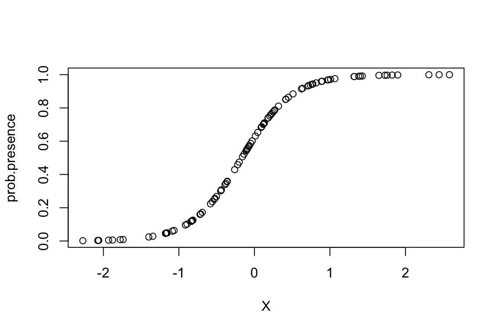
Generalized Linear Model for Community Ecology
Pedro Peres-Neto, Concordia UniversityTentative schedule
Day 1:
Introduction to types of data and approaches using GLMs in community ecology.
Types of patterns in species distributions involving trait and environmental variation.
Simulating data as a path to understand GLMs in community ecology.
The simplest GLM: widely used bivariate correlations.
The challenges of statistical inference regarding linking different types of information from communities and species.
Understanding estimators and their properties in GLMs.
Day 2:
From bivariate correlations to a variety of more complex GLMs: the case of Binomial and Poisson.
The role of latents in specifying GLMs for community ecology.
The issues underlying autocorrelation in ecological data: the cases of spatial and phylogenetic autocorrelation.
Simple GLMM approaches (Generalized Linear Mixed Models).
Day 3:
More complex GLMM approaches.
Potential approaches for incorporating intraspecific data on traits.
Discussion with participants: your research interests, your questions or your data (or anything really).
Philosophy: We can’t cover everything with extreme details. I’ve chosen a level that should be interesting enough and cover many different important aspects of GLMs applied to community ecology.
Note: I mostly apply here base functions so that participants without strong knowledge of certain packages (e.g., ggplot, dplyr) can follow the code more easily.
Questions: Participants should feel free to ask questions either directly or in the zoom chat. I’ve also set a good doc where participants can put questions there during the week when we are not connected. I’ll read them and try to provide an answer or cover the question somehow:
https://docs.google.com/document/d/17GQvGkBFs9MmLv6Yn473_Dr1t1Ps03VdHOHMhbZhBKk/edit
Simulating a single species
One way to develop good intuition underlying quantitative methods is to be able to simulate data according to certain desired characteristics. We can then apply methods (GLMs here) to see how well they retrieve the data characteristics.
Let’s start with a very simple GLM, the logistic regression for one single species. Here, for simplicity, we considered one predictor. In many ecological simulations, this single predictor is considered an “environmental gradient” containing many environmental predictors. We can consider more gradients and we will discuss that later on in the workshop.
set.seed(100) # so that we all have the same results
n.sites <- 100
X <- rnorm(n.sites)
b0 <- 0.5 # controls the max prob. values
prob.presence <- 1./(1+exp(-(b0+3*X)))
plot(prob.presence ~ X)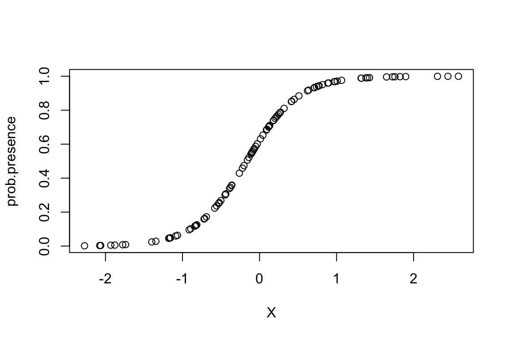
This model is pretty simple and its form is:
\[p=\frac{1}{1+e^{-(\beta_0+\beta_1X_1)}} = \frac{1}{1+e^{-(0.5+3X_1)}}\]
Now let’s generate presences and absences according to the logistic model expectation. Since is a logistic model, we use rbinom,i.e., binomial trials:
Distribution <- rbinom(n.sites,1,prob.presence)View(cbind(prob.presence,Distribution))Let’s model the data using logistic regression:
model <- glm(Distribution ~ X,family=binomial(link=logit))
coefficients(model)(Intercept) X
0.09200133 3.66168492 View(cbind(prob.presence,Distribution,model$fitted.values))Plotting the predicted versus the observed presence-absence values:
plot(model$fitted.values ~ Distribution)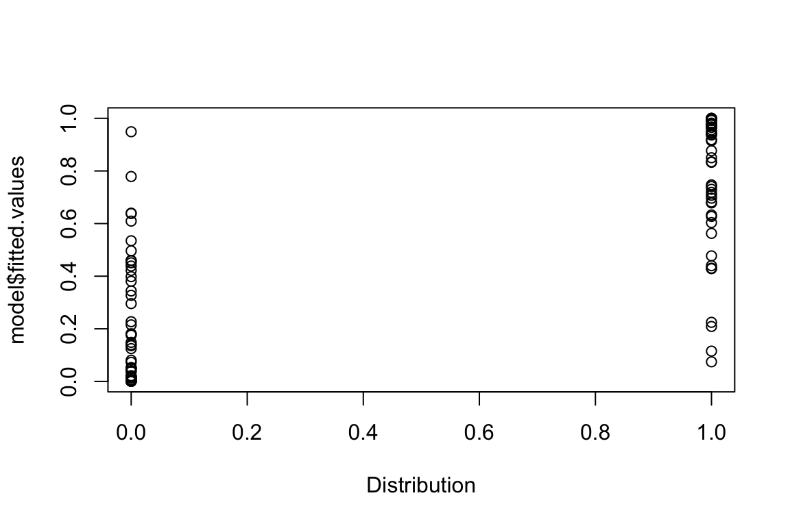
At this point, we won’t cover model diagnostics. Data were simulated according to the model and, as such, assumptions hold well. Plus, this is a single-species model; and this workshop is about community data, i.e., multiple species :).
This is a good blog explaining how to check for assumptions of logistic regressions.
Simulating a more realistic single species
Species don’t tend to respond linearly to environmental features:
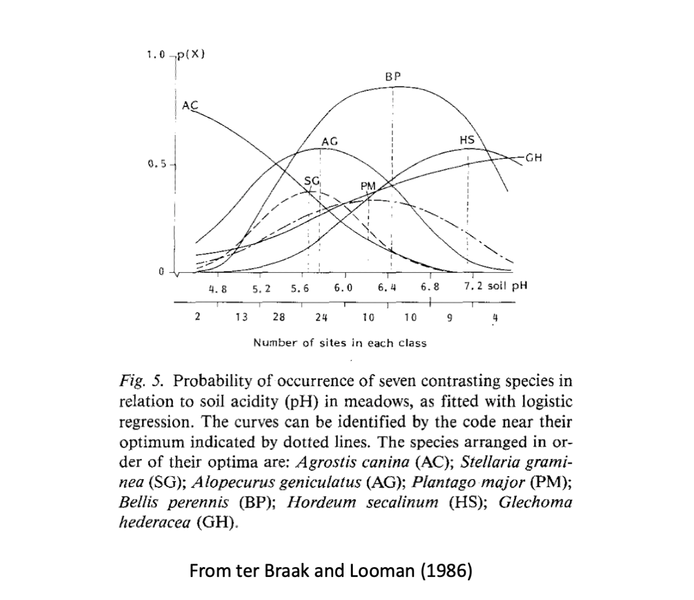
Now that we understand some basics of presence-absence data, let’s concentrate on more realistic species distribution data and multi-species data. There are many ways (found in the ecological literature) in which we can simulate these type of data. Below we will generate data using a standard Gaussian model for presence-absence data according to a trait and environmental feature (we will cover abundance data later on). This is a commonly used way to simulate data. Let’s start with a single species and one environmental variable.
set.seed(100) # so that we all have the same results
n.sites <- 100
X <- rnorm(n.sites)
optimum <- 0.2
niche.breadth <- 0.5
b0 <- 1 # controls the max prob. values
b1 <- -2
# this is a logistic model:
prob.presence <- 1./(1+exp(-(b0+(b1*(X-optimum)^2)/(2*niche.breadth^2)))) This more “complex” model has the following form:
\[p=\frac{1}{1+e^{-(\beta_0+\beta_1\frac{(X-\mu)^2}{2\sigma^2})}}=\frac{1}{1+e^{-(1+2\frac{(X-0.2)^2}{2\cdot0.5^2})}}\] where \(\mu\) represents the species optimum and \(\sigma\) its niche breadth.
Let’s plot these probabilities:
plot(X,prob.presence,ylim=c(0,1))
# plot optimum
abline(v=optimum,col="red")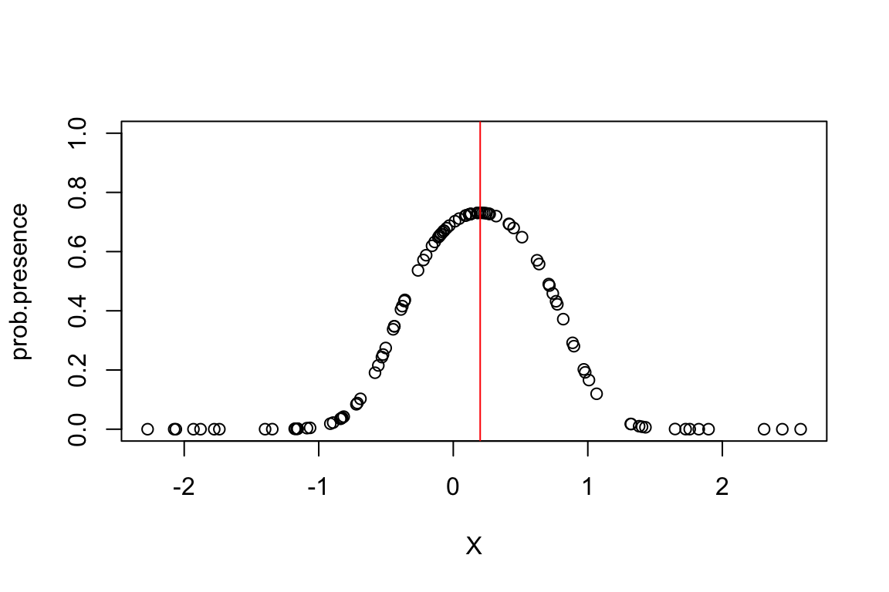
Now let’s simulate the distribution, i.e., presences and absences according to the model. Since is a logistic, we use rbinom,i.e., binomial trials:
Distribution <- rbinom(n.sites,1,prob.presence)Plot the species distribution against the environmental variable:
plot(X,prob.presence,ylim=c(0,1))
sites.present <- which(Distribution==1)
points(X[sites.present],Distribution[sites.present],col="green",pch=16,cex=0.5)
sites.absent <- which(Distribution==0)
points(X[sites.absent],Distribution[sites.absent],col="red",pch=16,cex=0.5)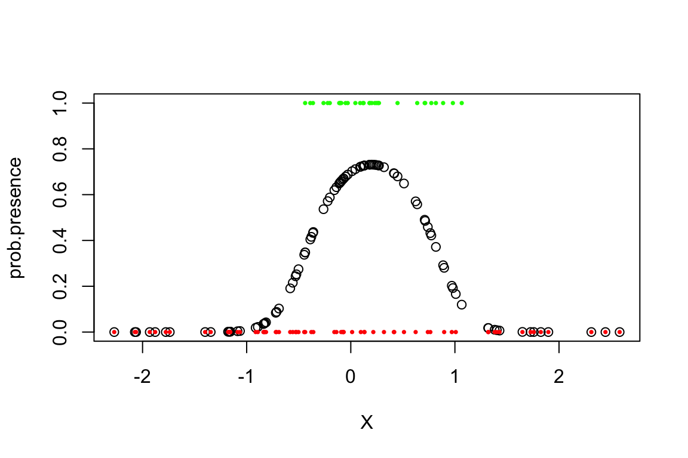
The parameters can be then estimated from the data using a logistic regression:
predictor <- cbind(X,X^2)
model <- glm(Distribution ~ predictor,family=binomial(link=logit))
coeffs <- coefficients(model)
b0 <- coeffs[1]
b1 <- coeffs[2]
b2 <- coeffs[3]
estimated.optimum <- -b1/(2*b2) # as in ter Braak and Looman 1986
estimated.niche.breadth <- 1/sqrt(-2*b2)
c(estimated.optimum,estimated.niche.breadth) # estimated by the glmpredictorX predictor
0.3317377 0.3922625 c(optimum,niche.breadth) # set in our simulations above[1] 0.2 0.5We can demonstrate computationally that the parameter estimations are unbiased as they are maximum likelihood via the GLM. Here we will be showing the sampling variation only for niche optimum and breadth. The other two parameters, \(\beta_0\) and \(\beta_1\) can be placed in the code below as well, demonstrating that they are also not biased.
n.samples <- 1000
estimation.matrix <- matrix(0,n.samples,2)
colnames(estimation.matrix) <- c("optimum","niche.breadth")
# remember that we already set the parameters for the model above, i.e., optimum and niche breadth
for (i in 1:n.samples){
X <- rnorm(n.sites)
prob.presence <- 1./(1+exp((-b0+((X-optimum)^2)/(2*niche.breadth^2)))) # this is a logistic model
Distribution <- rbinom(n.sites,1,prob.presence)
predictor <- cbind(X,X^2)
model <- glm(Distribution ~ predictor,family=binomial(link=logit))
coeffs <- coefficients(model)
intercept <- coeffs[1]
b1 <- coeffs[2]
b2 <- coeffs[3]
estimation.matrix[i,"optimum"] <- -b1/(2*b2)
estimation.matrix[i,"niche.breadth"] <- 1/sqrt(-2*b2)
}There may be warnings “glm.fit: fitted probabilities numerically 0 or 1 occurred”. But that is not a problem per se. It just tells us that the for some species, their models capture the distribution values perfectly. By the way, that also happens with real data.
Let’s observe the random variation around the parameter estimates and the average values:
boxplot(estimation.matrix)
abline(h=apply(estimation.matrix,2,mean),col="firebrick")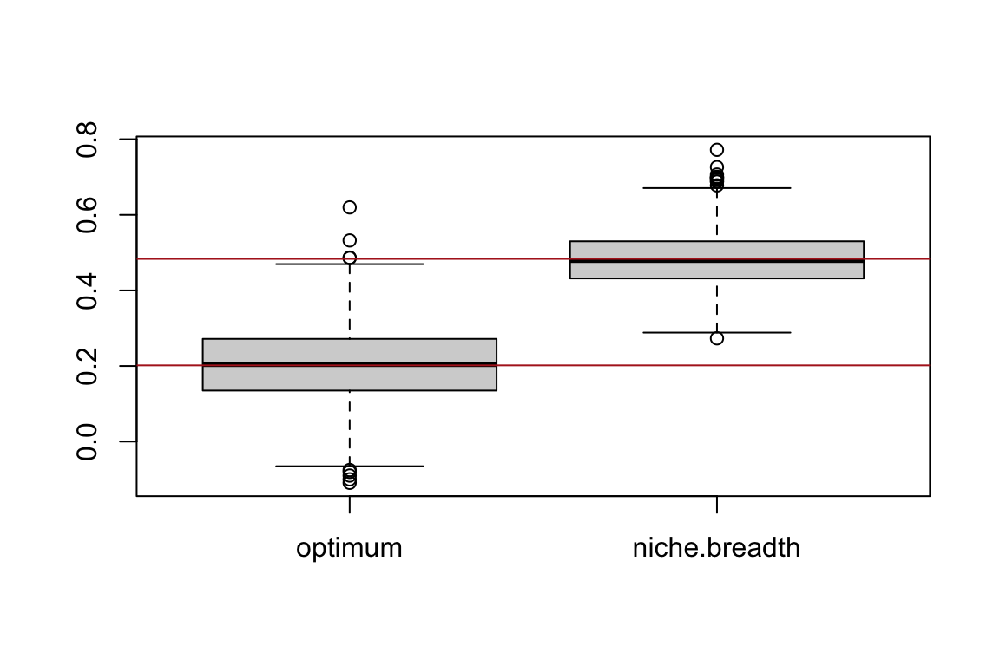
apply(estimation.matrix,2,mean) optimum niche.breadth
0.2016913 0.4834230 c(optimum,niche.breadth) # set in our simulations above[1] 0.2 0.5Note how the mean values are pretty close to the true values used to generate the data. This small simulation helps one understand the principles of sampling variation and unbiased estimation.
Simulating multiple species
Now, let’s generalize our code to multiple species. We will create a function that allow us to make sure that all sites have at least one species present and all species are present at least in one site; this is a common (but not necessary) characteristic of data used in community ecology.
generate_communities <- function(tolerance,E,T,n.species,n.communities){
repeat {
# generates variation in niche breadth across species
niche.breadth <- runif(n.species)*tolerance
b0 <- runif(n.species,min=-4,max=4)
prob.presence <- matrix(data=0,nrow=n.communities,ncol=n.species)
Dist.matrix <- matrix(data=0,nrow=n.communities,ncol=n.species)
for(j in 1:n.species){
# species optima are trait values; which makes sense ecologically
prob.presence[,j] <- 1./(1+exp((-b0[j]+((E-T[j])^2)/(2*niche.breadth[j]^2))))
Dist.matrix[,j] <- rbinom(n.communities,1,prob.presence[,j])
}
n_species_c <- sum(colSums(Dist.matrix)!=0) # _c for check
n_communities_c <- sum(rowSums(Dist.matrix)!=0)
if ((n_species_c == n.species) & (n_communities_c==n.communities)){break}
}
result <- list(Dist.matrix=Dist.matrix,prob.presence=prob.presence)
return(result)
}Now let’s generate a community. Note that we are using one environmental gradient and one trait. We could consider more variables (trait or environmental features) by adding terms to the logistic equation above. But for the time being, that will suffice. Note, thout, that in many ecological simulations, this single predictor is considered an “environmental gradient” containing many environmental predictors. We can consider more gradients and we will discuss that later on in the workshop.
set.seed(12351) # so that we all have the same results
n.communities <- 100
n.species <- 50
E <- rnorm(n.communities)
T <- rnorm(n.species)
Dist <- generate_communities(tolerance = 1.5, E, T, n.species, n.communities)
Probs <- Dist$prob.presence
Distribution <- Dist$Dist.matrixLet’s plot the probability values across environmental values. To do that nicely, we need to order the communities according to their environmental values as follows:
E.sorted <- sort(E, index.return=TRUE)
Probs.sorted <- Probs[E.sorted$ix,]
E.sorted <- E.sorted$x
matplot(E.sorted, Probs.sorted, cex.lab=1.5,cex.axis=2,lty = "solid", type = "l", pch = 1:10, cex = 0.8,
xlab = "Enviroment", ylab = "Probability of presence")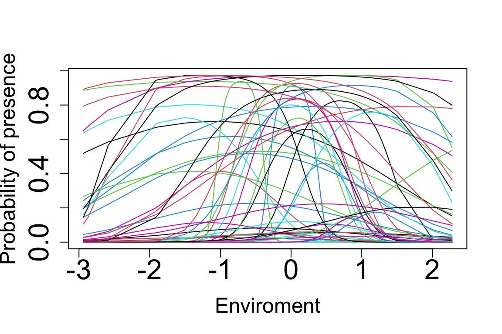
And let’s plot presences and absences against ordered environmental and trait values:
heatmap(as.matrix(Distribution),scale="none",Rowv=E,Colv=T,col=c("white","black"),labCol="species",labRow="communities")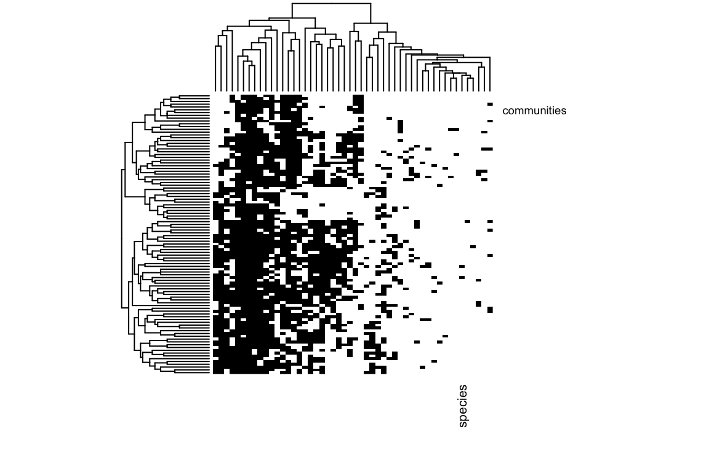
Now that we have a basic understanding of one GLM (logistic) and how they can model different types of community ecology data, i.e., species distributions, traits and environmental variation, we can start looking into approaches that that are used by ecologists to estimate the importance of environmental and trait variation to species distributions.
Let’s start by calculating the simplest and widely used metric of the community weighted trait mean:
CWM <- Distribution %*% T / rowSums(Distribution)For data that are based on presence-absence, this is simply the average of species trait values within communities.
Let’s now correlate CWM with the environment, i.e., community weighted means correlation. This is a widely used approach by ecologists:
plot(CWM ~ E)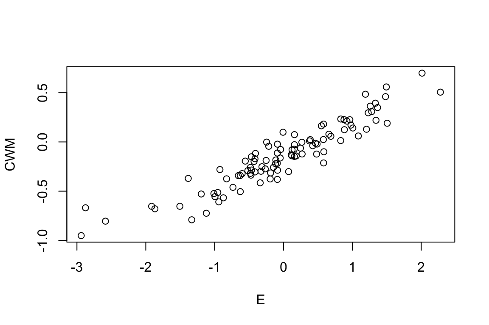
cor(CWM,E) [,1]
[1,] 0.9296338Again, the community weighted means correlation is likely the most commonly used approach with 1000s of studies having been published with it.
Another approach is to calculate the species weighted environment means and correlate with trait values. This approach is less common (but still quite used in the ecological literature) and is sometimes referred as to species niche centroid (SNC):
SNC <- t(E %*% Distribution) / colSums(Distribution)Let’s now correlate SNC with species traits:
plot(T ~ SNC)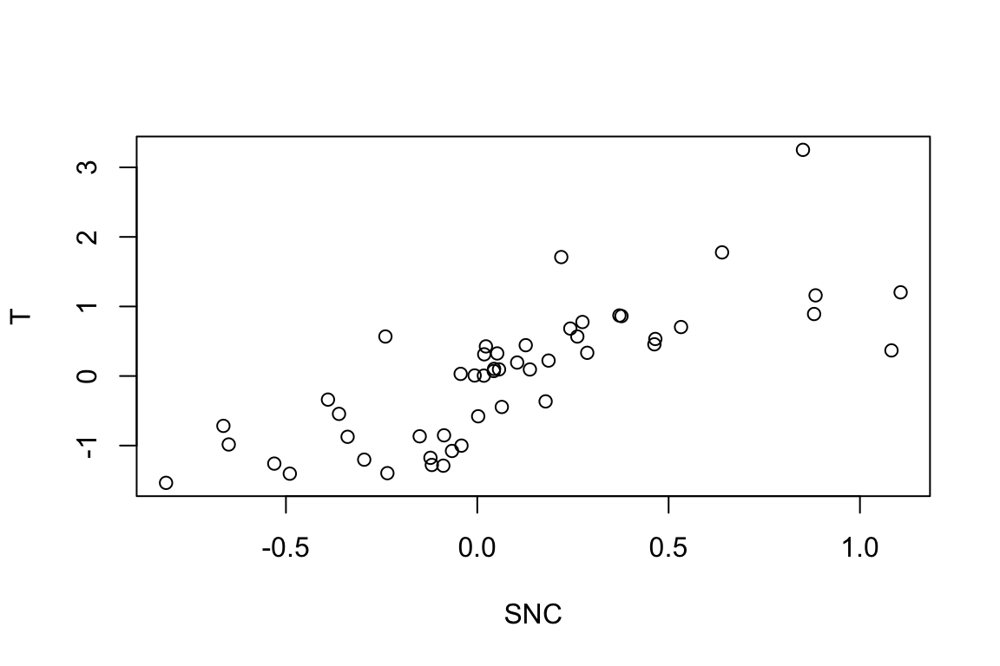
cor(T,SNC) [,1]
[1,] 0.7700065Note that the two correlations (CWM- and SNC-based) differ. That’s odd as they were both calculated on exactly the same information: the same Species Matrix, Environment and Trait. Peres-Neto, Dray & ter Braak (2017) demonstrated (mathematically) that this issue is related to the fact that although CWM and SNC are based on weights, they don’t standardized and correlate them with the proper weights. CWM is based on averages calculated based on the sum of species (richness or total abundance per community) and SNC is based on averages calculated based on the number of communities in which species are presence (prevalence) or their total abundance.
Because of that, we have found (Peres-Neto et al. 2017) a few undesirable properties of these two correlations (CWM and SNC-based correlations). One is that when the correlation is expected to be zero, the sampling variation of these correlations are quite large (i.e., low precision). Let’s evaluate this issue: Below we generate data with structure, but then use a false trait completely independent of the original one, thus destroying the link between trait and environmental variation.
set.seed(120) # so that we all have the same results
n.communities <- 100
n.species <- 50
n.samples <- 100 # set to larger later
CWM.cor <- as.matrix(0,n.samples)
for (i in 1:n.samples){
E <- rnorm(n.communities)
T <- rnorm(n.species)
Dist <- generate_communities(tolerance = 1.5, E, T, n.species, n.communities)
T.false <- rnorm(n.species)
CWM <- Dist$Dist.matrix %*% T.false / rowSums(Dist$Dist.matrix)
CWM.cor[i] <- cor(CWM,E)
}Let’s plot the correlations:
boxplot(CWM.cor)
abline(h=mean(CWM.cor),col="firebrick")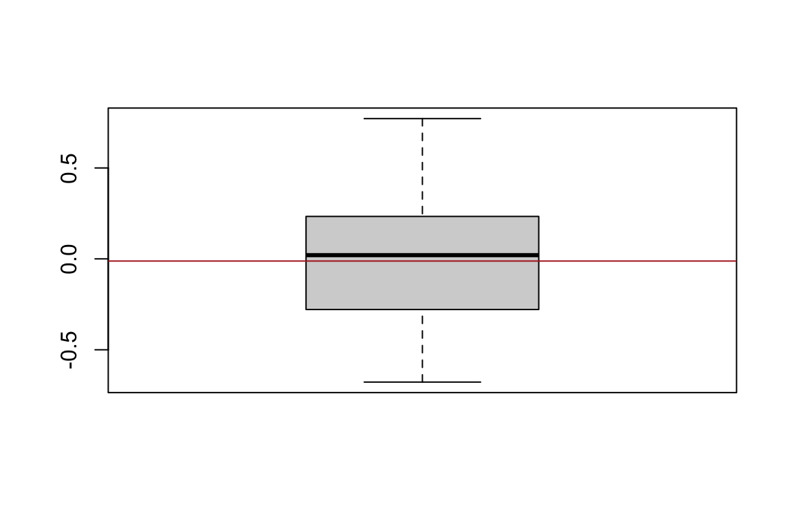
Note that the variation is quite large for correlations based on a random trait (i.e., T.false). For example, some correlations were greater than 0.7 and smaller than -0.60. We showed that although the variation is quite large, the expected value is zero; we would need 10000 or more simulations to make mean(CWM.cor) approach almost zero. A similar issue (i.e., large variation, low precision) happens for correlations based on SNO but we won’t simulate here for brevity. One can easily adapt the code above to do so though.
We have shown that precision is much increased when using the 4th corner statistic. Originally described in matrix form by Legendre et al. (1997), we (Peres-Neto et al. 2017) demonstrated that the 4th corner statisticit is a GLM assuming an identity link, i.e., normally distributed residuals.
The basis of the 4th corner correlation is that it starts by the standardization of the trait by the sum of their species abundances (or number of sites occupied for presence-absence data), and the standardization of the environment by the sum of their community abundances. The default standardization (function scale) transforms the variable (trait or environment) in a way that its mean and standard deviation are 0 and 1, respectively. A weighted standardization makes the weighted mean and weighted standard deviation to be 0 and 1, respectively.
R doesn’t have a default function for weighted standardization. But this can be done using the follow function:
standardize_w <- function(X,w){
ones <- rep(1,length(w))
Xc <- X - ones %*% t(w)%*% X
Xc / ones%*%sqrt(t(ones)%*%(Xc*Xc*w))
} Let’s get back to the original data used to calculate CWM and SNC based correlations:
set.seed(12351) # so that we all have the same results
n.communities <- 100
n.species <- 50
E <- rnorm(n.communities)
T <- rnorm(n.species)
Dist <- generate_communities(tolerance = 1.5, E, T, n.species, n.communities)
Distribution <- Dist$Dist.matrixWe then standardize environment and trait by their respective abundance sums (rows for environment & columns for trait).
# make distribution matrix relative to its total sum; it makes calculations easier
Dist.rel <- Distribution/sum(Distribution)
Wn <- rowSums(Dist.rel)
Ws <- colSums(Dist.rel)
E.std_w <- standardize_w(E,Wn)
T.std_w <- standardize_w(T,Ws)Note: In the future, include here the calculation of the weighted mean and standard deviation of E.std_w and T.std_w to show that they are zero and one, respectively (when weighted).
We then calculate the community average trait (weighted standardized) or the species niche centroid (weighted standardized):
CWM.w <- Dist.rel %*% T.std_w / Wn
SNC.w <- t(E.std_w) %*% Dist.rel / WsWe then calculate the weighted correlation between the two vectors above but their appropriate weights. In the case of CWM.w:
# either using weighted correlation:
t(CWM.w) %*% (E.std_w*Wn) [,1]
[1,] 0.2813709# or the same value using weighted regression:
lm(CWM.w ~ E.std_w,weights = Wn)
Call:
lm(formula = CWM.w ~ E.std_w, weights = Wn)
Coefficients:
(Intercept) E.std_w
8.804e-17 2.814e-01 In the case of SNC.w:
# either using weighted correlation:
SNC.w %*% (T.std_w*Ws) [,1]
[1,] 0.2813709# or the same value using weighted regression:
lm(t(SNC.w)~T.std_w,weights = Ws)
Call:
lm(formula = t(SNC.w) ~ T.std_w, weights = Ws)
Coefficients:
(Intercept) T.std_w
-5.000e-17 2.814e-01 Note that regardless whether SNC or CWM were used, the 4th corner correlation gives the same result, which makes sense mathematically as both correlations use the exact same information. The reason (again) that the CWM and SNC standard correlation approaches differ is because they don’t use appropriate weights in their standardization and weighted correlation.
Another issue to notice is that the 4th corner values are smaller than their standard CWM values. Whereas the CWM correlation was 0.9296, the 4th corner was 0.2814. The issue here is that the CWM correlation refers only to the trait variation among communities (trait beta-diversity), whereas the 4th corner refers to the total variation in traits (within, i.e., trait alpha diversity, and among communities, i.e., trait beta-diversity). This was demonstrated by algebraic proofs in Peres-Neto et al. (2017) but we won’t get into these details here.
This does bring an interesting point for the analysis of trait in a community ecology context. The relative trait variation among communities (i.e., total trait beta-diversity) and within communities (i.e., gamma trait diversity) can be estimated as follows:
# Among communities
Among.Variation <- sum(diag(t(CWM.w)%*%(CWM.w* Wn))) * 100
# Within communities
Within.Variation <- 100 - Among.Variation
c(Among.Variation,Within.Variation)[1] 9.460287 90.539713The standard CWM correlation is high because it pertains to only 9.46% of the total variation, whereas the 4th corner correlation pertains to all variation, i.e., both within and among. As the among communities component become large, the two correlations become somewhat more similar.
Let’s now investigate the sampling properties of the 4th corner correlation as we did above for the CWM correlation, i.e., when the trait-environment correlation is expected to be zero:
set.seed(120) # so that we all have the same results and the same communities and traits are generated as before
n.communities <- 100
n.species <- 50
n.samples <- 100 # set to larger later
CWM.4th.cor <- as.matrix(0,n.samples)
for (i in 1:n.samples){
E <- rnorm(n.communities)
T <- rnorm(n.species)
Dist <- generate_communities(tolerance = 1.5, E, T, n.species, n.communities)
T.false <- rnorm(n.species) # destroys the original generated relationship
Dist.rel <- Dist$Dist.matrix/sum(Distribution)
Wn <- rowSums(Dist.rel)
E.std_w <- standardize_w(E,Wn)
T.std_w.false <- standardize_w(T.false,Ws)
CWM.w.false <- Dist.rel %*% T.std_w.false / Wn
t(CWM.w.false) %*% (E.std_w*Wn)
CWM.4th.cor[i] <- cor(CWM,E)
}Let’s compare the two statistics:
boxplot(cbind(CWM.cor,CWM.4th.cor))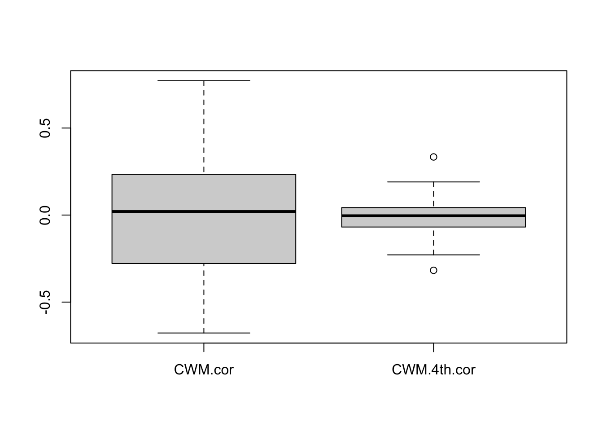
Note how the 4th corner correlation is a much more precise predictor around the true value of zero.
We know for a while that the bivariate correlations discussed so far have elevated type I error rates based on parametric testing and under certain permutation schemes (Dray and Legendre 2008; and Dray et al. 2014). That means that when the statistical null hypothesis of no link between trait and environment will be rejected more often than the preset alpha level (significance level, e.g., 0.05 or 0.01). More recently, this was also established for more complex models (more on this later). Resolving these issues are challenging and remain a very active field of research.
The code so far has helped to build some intuition underlying the different bivariate correlations. We will now use a more complete utility function that allows calculating these different metrics using one single function. This function is part of Peres-Neto et al. (2017).
Download the utility function file:
Load the functions into R:
source("UtilityFunctions.R")Let’s use the function that calculates a number of the bivariate correlations, which are essentially simple GLMs.
set.seed(125)
E <- rnorm(n.communities)
T <- rnorm(n.species)
Dist <- generate_communities(tolerance = 1.5, E, T, n.species, n.communities)
TraitEnv.res <- TraitEnvCor(Distribution,E,T, Chessel = TRUE)
TraitEnv.res CWM.cor wCWM.cor SNC.cor
0.016601826 0.054714685 0.288779046
wSNC.cor Fourthcorner Chessel.4thcor
0.039080469 0.006235766 0.015313259
Among Wn-variance (%) Within Wn-variance (%)
1.298888497 98.701111503 If we want to isolate the 4th corner correlation, we can simply:
TraitEnv.res["Fourthcorner"]Fourthcorner
0.006235766 Let’s now run permutation Model 2, Model 4 and p.max for data without a link between trait and environment. We first create the data with no link:
set.seed(125)
E <- rnorm(n.communities)
T <- rnorm(n.species)
Dist <- generate_communities(tolerance = 1.5, E, T, n.species, n.communities)
Distribution <- Dist$Dist.matrix
T.false <- rnorm(n.species)
TraitEnv.res <- TraitEnvCor(Distribution,E,T.false, Chessel = FALSE)
TraitEnv.res["Fourthcorner"]Fourthcorner
0.04168433 Note how the 4th corner correlation is quite low, i.e., 0.0417. Now let’s check this value with permutations:
set.seed(125)
nrepet <- 99
obs <- TraitEnv.res["Fourthcorner"]
sim.row <- matrix(0, nrow = nrepet, ncol = 1)
sim.col <- matrix(0, nrow = nrepet, ncol = 1)
for(i in 1:nrepet){
per.row <- sample(nrow(Distribution)) # permute communities
per.col <- sample(ncol(Distribution)) # permute species
sim.row[i] <- TraitEnvCor(Distribution,E[per.row],T.false)["Fourthcorner"]
sim.col[i] <- TraitEnvCor(Distribution,E,T.false[per.col])["Fourthcorner"]
}
pval.row <- (length(which(abs(sim.row) >= abs(obs))) + 1) / (nrepet + 1)
pval.col <- (length(which(abs(sim.col) >= abs(obs))) + 1) / (nrepet + 1)
p.max <- max(pval.row,pval.col)
c(pval.row,pval.col,p.max)[1] 0.01 0.47 0.47As we can see, although only environmental features were important but not traits, the row permutation (across commmunities) detected the relationship as significant. Note, however, that the permutation across species did not. ter Braak et al. (2012) determined that the maximum value between the two p-values (row and column based) assures appropriate type I error rate as expected alpha.
The function above allows understanding the permutation procedures. That said, the utility function file has a more complete function:
set.seed(125)
CorPermutationTest(Distribution, E, T.false, nrepet = 99) cor prow pcol pmax
CWM.cor 0.36605145 0.01 0.33 0.33
wCWM.cor 0.28014652 0.01 0.44 0.44
SNC.cor 0.14836877 0.39 0.36 0.39
wSNC.cor 0.09492897 0.26 0.47 0.47
Fourthcorner 0.04168433 0.01 0.47 0.47I hope by now you are convinced that the 4th corner is a more robust metric of bivariate correlation (one trait and one environment). Here we will use the Aravo community plant data set (Massif du Grand Gabilier, France; Choler 2005) contained in the package ade4. We provide more explanation on the data in Dray et al. (2012). Here we will replicate the analysis in that paper. The data contain species abundances for 82 species distributed into 75 sites. Sites are described by 6 environmental variables: mean snowmelt date over the period 1997–1999, slope inclination, aspect, index of microscale landform, index of physical disturbance due to cryoturbation and solifluction, and an index of zoogenic disturbance due to trampling and burrowing activities of the Alpine marmot. All variables are quantitative except the landform and zoogenic disturbance indexes that are categorical variables with five and three categories, respectively. And eight quantitative functional traits (i.e., vegetative height, lateral spread, leaf elevation angle, leaf area, leaf thickness, specific leaf area, mass-based leaf nitrogen content, and seed mass) were measured on the 82 most abundant plant species (out of a total of 132 recorded species).

Load the package and the data:
# install.packages("ade4") in case you don't have it installed
library(ade4)
data(aravo)
dim(aravo$spe)[1] 75 82dim(aravo$env)[1] 75 6dim(aravo$trait)[1] 82 8Let’s estimate the 4th corner correlations between each trait and environmental variable. nrept is the number of permutations and should be set to a reasonable high number (say 9999). Here we will use 999 to speed calculations. Note that all permutation tests (not only the ones for the 4th corner) include the observed correlation as part of the null distribution (i.e., permuted); hence the use of nrept as 999, i.e., 1000 possible permutations (the observed correlation is a possible permutation if we run the test infinite times; which is not possible; so we consider it as default. modeltype is set to 6, which is the largest p-value between model 2 permutation (entire communities in the distribution matrix) and model 4 (entire species in the distribution matrix). The p-max procedure is detailed in ter Braak et. 2012. Finally, p-values are adjusted using the false discovery rate for multiple testing.
four.comb.aravo.adj <- fourthcorner(aravo$env, aravo$spe,
aravo$traits, modeltype = 6, p.adjust.method.G = "none",
p.adjust.method.D = "fdr", nrepet = 999)Results can be retrieved by simply typing:
four.comb.aravo The ‘classic’ table of results can be produced as follows. D2 indicates that the 4th corner correlation is to be used between the quantitative variable and each category of the qualitative variables. Other bivariate metrics of 4th corner association are also described in Dray and Legendre (2008) for qualitative-quantitative associations. In the default plot, blue cells correspond to negative signicant relationships while red cells correspond to positive signicant relationships (this can be modified using the argument col in the function fourthcorner).
plot(four.comb.aravo.adj, alpha = 0.05, stat = "D2")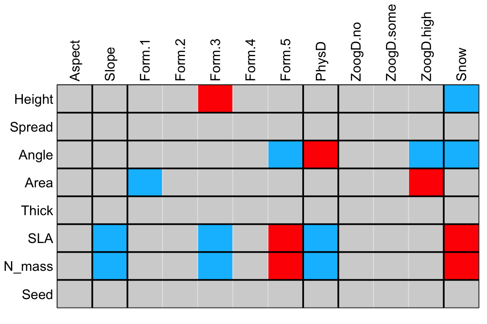
Although widely used (1000s of studies published using them), bivariate correlations are the simplest forms of GLMs for community data. That said, the 4th corner correlation can be calculated in a way that allows us (hopefully) to understand how more complex GLMs can be produced. They allow us understanding species stacking. Perhaps I should have considered this presentation before the calculations based on weights and standardizations (will inverst in the next version of the workshop). Let’s build a small data so that we understand this principle. Consider a very artificial distribution matrix with 4 communities and 4 species. It was made artificial so that we can understand well its structure:
Distribution <- as.matrix(rbind(c(1,1,0,0),c(1,0,0,0),c(0,0,1,1),c(0,0,1,0)))
Distribution [,1] [,2] [,3] [,4]
[1,] 1 1 0 0
[2,] 1 0 0 0
[3,] 0 0 1 1
[4,] 0 0 1 0Let’s create some traits and environmental features:
T <- c(1,2,5,8)
E <- c(10,12,100,112)Now let’s calculate its 4th corner correlation:
TraitEnvCor(Distribution,E,T)["Fourthcorner"]Fourthcorner
0.8902989 The 4th corner correlation is pretty high given the highly structured data. Another way to calculate a 4th corner correlation is by using what we refer to as an “inflated approach”. This approach allows understanding the structure of stacked information. This figure demonstrates the process and calculation:
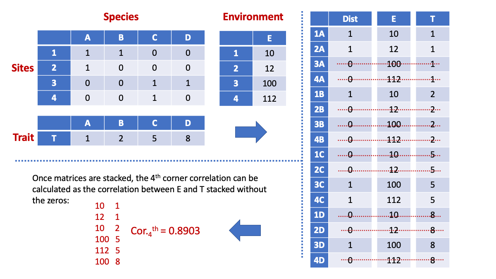
Next we stack species distributions, environment and trait information:
n.species <- ncol(Distribution)
n.sites <- nrow(Distribution)
Dist.stacked <- as.vector(Distribution)
E.stacked <- rep(1, n.species) %x% E
T.stacked <- T %x% rep(1, n.sites) View(cbind(Dist.stacked,E.stacked,T.stacked))We then eliminatate the cells for which the distribution is zero and calculate the correlation:
zeros.dist <- which(Dist.stacked==0)
cor(E.stacked[-zeros.dist],T.stacked[-zeros.dist])[1] 0.8902989Note: perhaps I should have started with this explanation and then move to the more complicated way of using weights. The inflated approach is in fact a way to see how weights are given.
Simple model
Although community ecologists commonly work with presence-absence data, abundance data are also commonly used in many approaches. Here we will use a Poisson model to simulate community data involving species distributions, traits and environment. Although link functions are used in all families of GLMs (poisson, binomial, negative binomial, gamma, etc), we will try to provide an explanation here of what they mean using abundance data. But the same rationale will apply to all families.
set.seed(100) # so that we all have the same results
n.sites <- 100
X <- rnorm(n.sites)
b0 <- 0.05
b1 <- 2
Y <- exp(b0 + b1*X)
Abundance <- rpois(n.sites,Y)
plot(Abundance ~ X)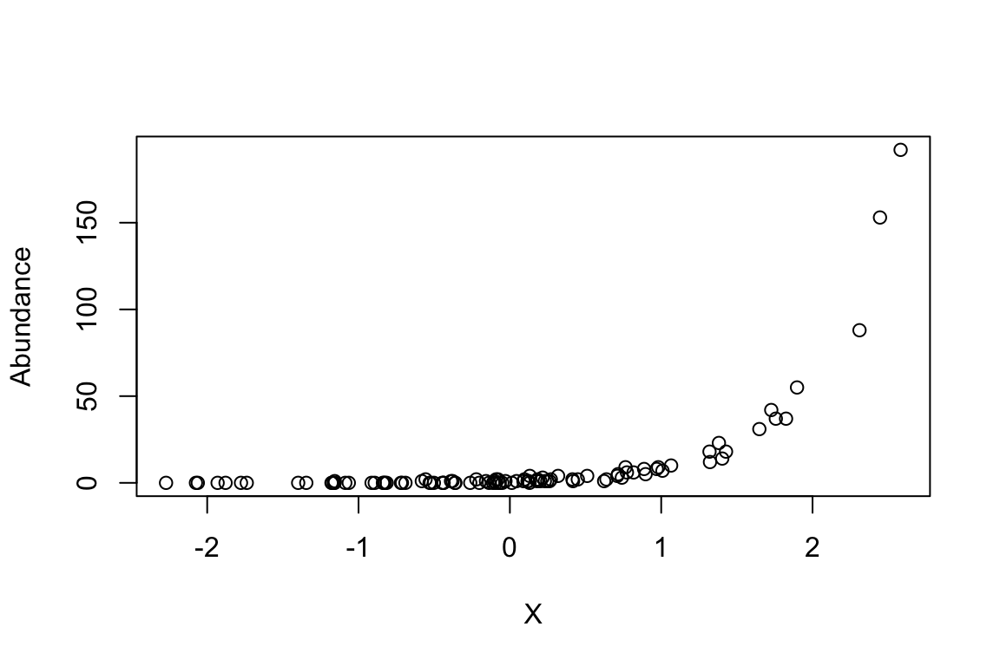
This Poisson model has the following form. Note that multiple predictors can be considered. Here, for simplicity, we considered one predictor. Again, in many ecological simulations, this single predictor is considered an “environmental gradient” containing many environmental predictors. We can consider more gradients and we will discuss that later on in the workshop.
\[Y={e^{(\beta_0+\beta_1X_1)}}=e^{(0.05+1.2X_1)}=log(Y)=0.05+1.2X_1\] The model can be estimated as:
model <- glm(Abundance ~ X, family="poisson")
coefficients(model)(Intercept) X
0.03095719 2.02323099 plot(model$fitted.values ~ Abundance)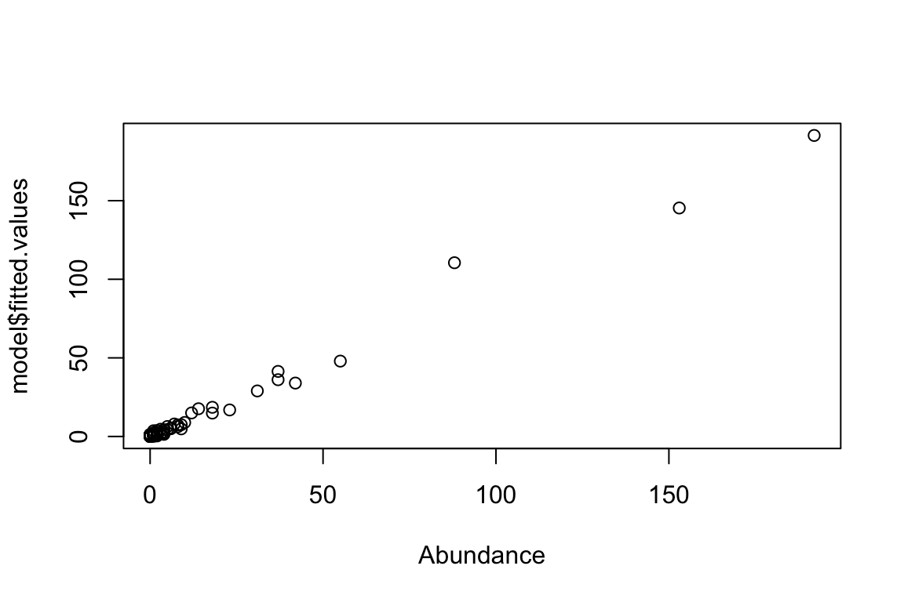
GLMs are linear models because they use link-functions to map non-linear relationships to a linear one. In this way, the link function connects the predictors in a model with the expected (mean) value of the response variable (dependent variable). In other words, the link-functions transforms the response values into new values that can be then regressed using linear approaches (Maximum Likelihood-based approaches and not simple OLS, ordinary least square approaches as in linear regression) against the X values. As we saw in the first example of the Poisson regression above, the relationship is not linear. The link-function for the Poisson distribution is ln of the response. Let’s understand this point by plotting the log(Y) and X. Note that Y has no error and Abundance has error (i.e., based on the rpois, i.e., poisson trials)
# without error:
plot(log(Y) ~ X)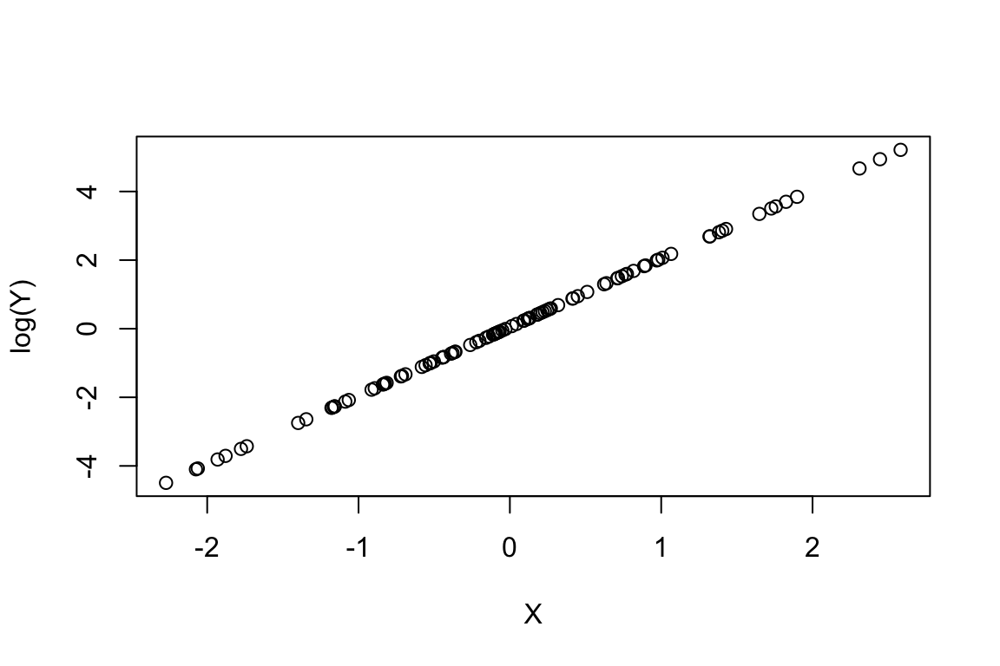
# with error
plot(log(Abundance) ~ X)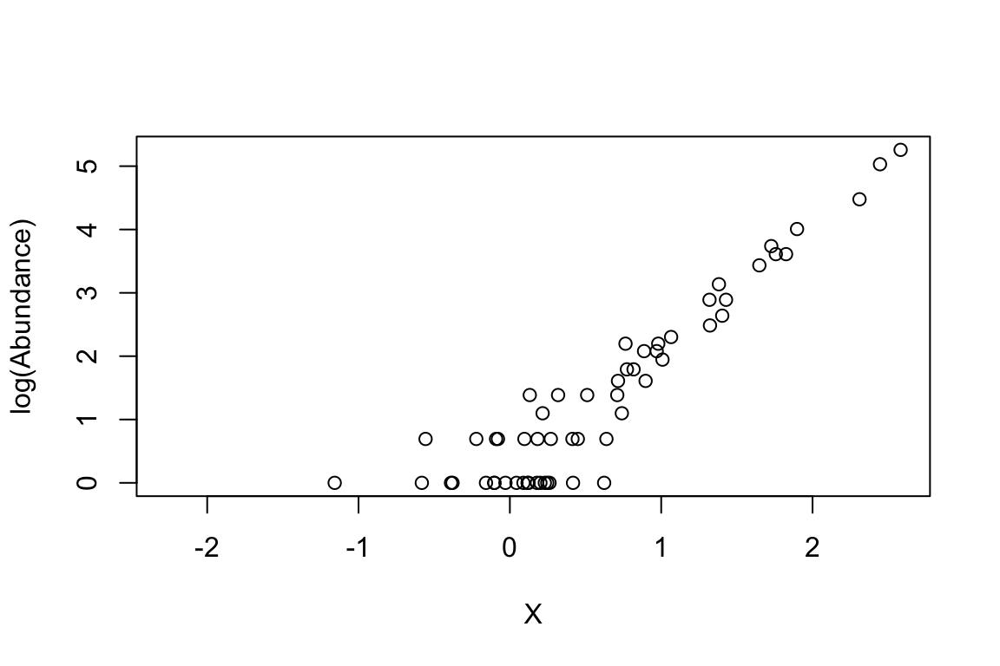
What does the passage “the link-function connects the predictors in a model with the expected (mean) value of the response variable (dependent variable)” mean? As you can notice, we used Poisson trials to generate error around the initial Y values. Let’s create a 100 possible trials:
mult.Y <- replicate(n=100,expr=rpois(n.sites,Y))View(mult.Y)Each column in mult.Y contains one single trial. This would mimic, for instance, your error in estimating abundances when sampling real populations and assuming that a Poisson GLM would model your abundances across sites well. As such, in real data, obviously, we only have one “trial”. But this small demonstration hopefully helps you understand what the GLM is trying to estimate via the link-function.
Let’s repeat the predictor X 100 times`so that it becomes compatible in size with the multiple trials; and we can then plot them:
rep.X <- rep(X, times = 100)
plot(as.vector(mult.Y) ~ rep.X,pch=16,cex=0.5,col="firebrick")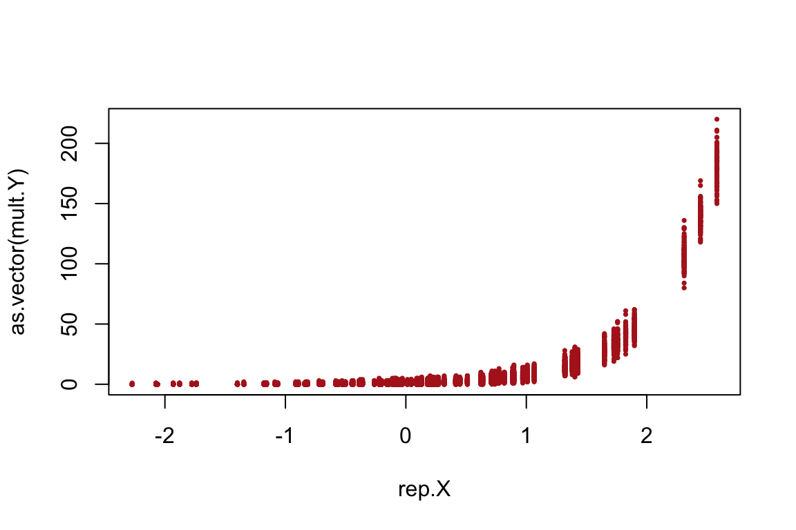
Note that larger values of abundances tend to have more error under the poisson model (which is also ecologically plausible).
Now we can understand what the passage “the link-function connects the predictors in a model with the expected (mean) value of the response”. Let’s first increase the number of trials to 10000 and for each site (for which we have an X value), calculate its mean:
mult.Y <- replicate(n=10000,expr=rpois(n.sites,Y))
mean.mult.Y <- apply(mult.Y,1,mean)
plot(mean.mult.Y ~ Y)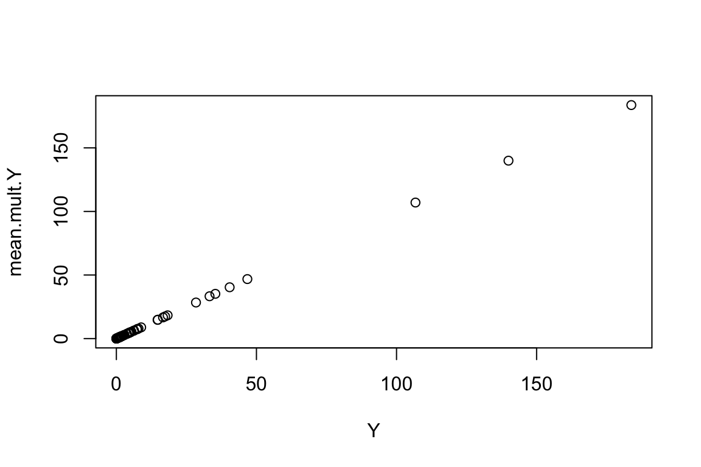
As we can observe, the mean across all trials (errors) equal the response variable Y, i.e., without error. Hopefully this provides a general understanding of what link functions are. A similar explanation can be given for the logistic regression (i.e., binomial error). In there we use a logit link function (transformation) instead.
Missing predictors in GLMs as a source of error
Obviously the fit is great, particularly because we considered all the important predictors in the model. We don’t usually have all predictors in a model and this can be simulated as well. Considering the following example where two environmental predictors were used to generate the abundance data but only was used in the regression model:
\[p={e^{(\beta_0+\beta_1X_1+\beta_1X_2)}}\]
set.seed(100) # so that we all have the same results
n.sites <- 100
X <- matrix(rnorm(n.sites*2),n.sites,2)
b0 <- 2
b1 <- 0.5
b2 <- 1.2
Y <- exp(b0 + b1*X[,1] + b1*X[,2]) # there are more direct matricial ways to do that
Abundance <- rpois(n.sites,Y)
model <- glm(Abundance ~ X[,1], family="poisson")
model
Call: glm(formula = Abundance ~ X[, 1], family = "poisson")
Coefficients:
(Intercept) X[, 1]
2.0472 0.5294
Degrees of Freedom: 99 Total (i.e. Null); 98 Residual
Null Deviance: 532.1
Residual Deviance: 258.8 AIC: 637.7plot(model$fitted.values ~ Abundance)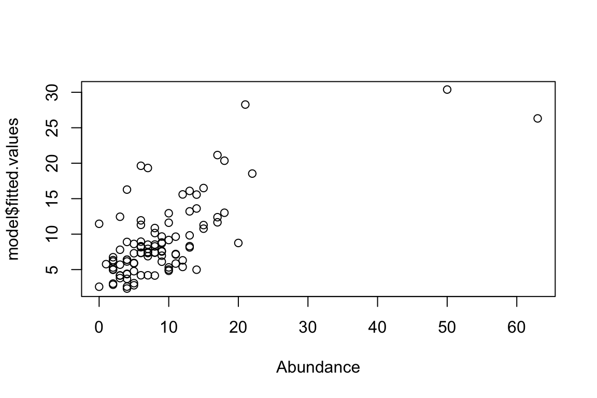
AIC(model)[1] 637.7152Note that the errors around predicted and true values are much greater because only one predictor was included in the GLM even though two predictors were important. Now considering both predictors:
model <- glm(Abundance ~ X, family="poisson")
model
Call: glm(formula = Abundance ~ X, family = "poisson")
Coefficients:
(Intercept) X1 X2
1.9808 0.5300 0.4931
Degrees of Freedom: 99 Total (i.e. Null); 97 Residual
Null Deviance: 532.1
Residual Deviance: 119 AIC: 500plot(model$fitted.values ~ Abundance)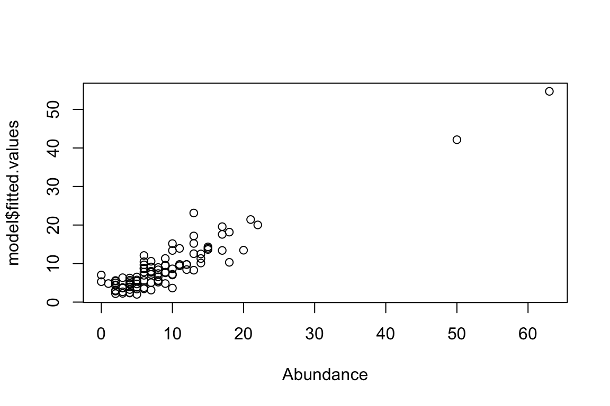
AIC(model)[1] 500.0011This is a critical empirical (ecological) consideration because we can’t measure everything. The error is much smaller and, as a consequence, the model fit is much improved (i.e., smaller AIC values) because it considers the two predictors. It can’t be perfect because of the error related to the poisson trials that will always result in random variation (residual variation).
A more realistic Gaussian Poisson model
As for the logistic model, we can also consider a more realistic Poisson model based on a Gaussian distribution:
\[Y={h\cdot e^{-(\beta_0+\beta_1\frac{(X-\mu)^2}{2\sigma^2})}}\] As before, \(\mu\) represents the species optimum and \(\sigma\) its niche breadth. \(h\) represents the expected abundance in the optimum environmental value. Using code to simulate this model for one species; for simplicity, we will set \(\beta_0=0\) and \(\beta_1=1\):
set.seed(110)
X <- rnorm(n.sites)
optimum <- 1.2
niche.breadth <- 0.5
h <- 104
Y <- h * exp(-(X-optimum)^2/(2*niche.breadth^2))
Abundance <- rpois(n.sites,Y)
plot(Abundance~X)
abline(v=1.2,col="firebrick")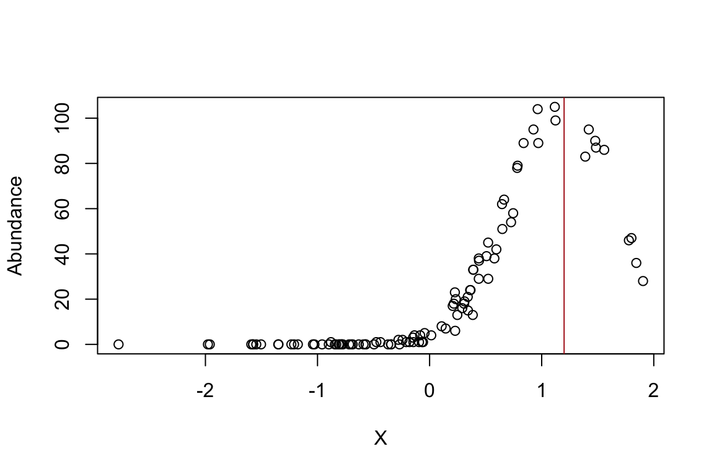
Let’s fit the Poisson model:
predictor <- cbind(X,X^2)
model <- glm(Abundance ~ predictor,family="poisson")
plot(model$fitted ~ X)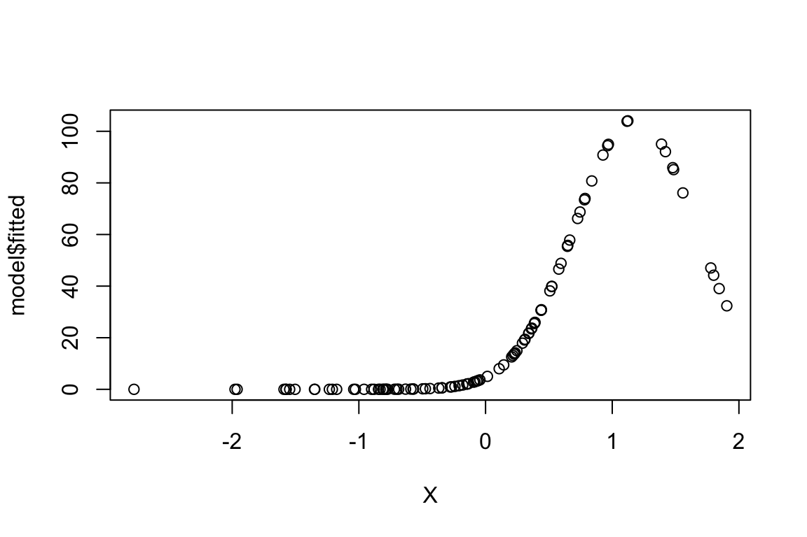
coeffs <- coefficients(model)As before, parameters used to simulate the species distribution can be estimated as:
b0 <- coeffs[1]
b1 <- coeffs[2]
b2 <- coeffs[3]
estimated.optimum <- -b1/(2*b2)
estimated.niche.breadth <- 1/sqrt(-2*b2)
h <- exp(b0 + b1*estimated.optimum + b2*estimated.optimum^2)
cbind(estimated.optimum,estimated.niche.breadth,h) estimated.optimum estimated.niche.breadth h
predictorX 1.179753 0.4726181 104.8035Now we can generalize the code to generate abundance data for multiple species:
generate_community_abundance <- function(tolerance,E,T,preset_nspecies,preset_ncommunities){
repeat {
# one trait, one environmental variable
h <- runif(preset_nspecies,min=0.3,max=1)
sigma <- runif(preset_nspecies)*tolerance
L <- matrix(data=0,nrow=preset_ncommunities,ncol=preset_nspecies)
for(j in 1:preset_nspecies){
L[,j] <- 30*h[j]*exp(-(E-T[j])^2/(2*sigma[j]^2))
#rpois(preset_ncommunities,30*h[j]*exp(-(E-T[j])^2/(2*sigma[j]^2)))
}
n_species_c <- sum(colSums(L)!=0) # _c for check
n_communities_c <- sum(rowSums(L)!=0)
if ((n_species_c == preset_nspecies) & (n_communities_c==preset_ncommunities)){break}
}
return(L)
}set.seed(120) # so that we all have the same results
n.communities <- 100
n.species <- 50
E <- rnorm(n.communities)
T <- rnorm(n.species)
Y <- generate_community_abundance(tolerance = 1.5, E, T, n.species, n.communities)Let’s plot the expected abundance values across environmental values. To do that nicely, we need to order the communities according to their environmental values as follows:
E.sorted <- sort(E, index.return=TRUE)
Y.sorted <- Y[E.sorted$ix,]
E.sorted <- E.sorted$x
matplot(E.sorted, Y.sorted, cex.lab=1.5,cex.axis=2,lty = "solid", type = "l", pch = 1:10, cex = 0.8,
xlab = "Enviroment", ylab = "Abundance")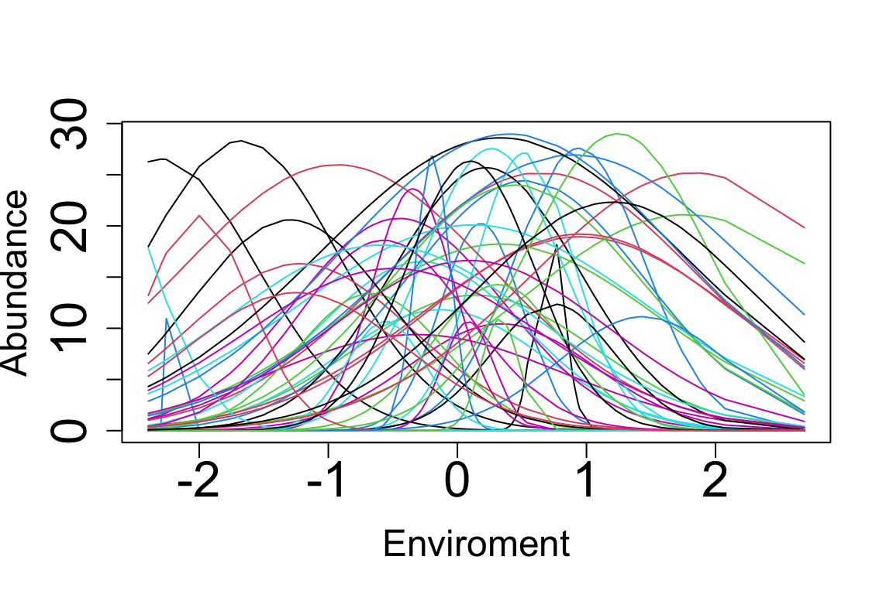
Y, however, has no error and to create abundance values for each species (i.e., each column of Y; MARGIN = 2) according to a poisson model we can simply:
Abundances <- apply(Y,MARGIN=2,function(x) rpois(n.communities,x))Let’s plot the abundance values across environmental values. With erorr, they don’t look as nice, obviously:
E.sorted <- sort(E, index.return=TRUE)
Abundances.sorted <- Abundances[E.sorted$ix,]
E.sorted <- E.sorted$x
matplot(E.sorted, Abundances.sorted, cex.lab=1.5,cex.axis=2,lty = "solid", type = "l", pch = 1:10, cex = 0.8, xlab = "Enviroment", ylab = "Abundance")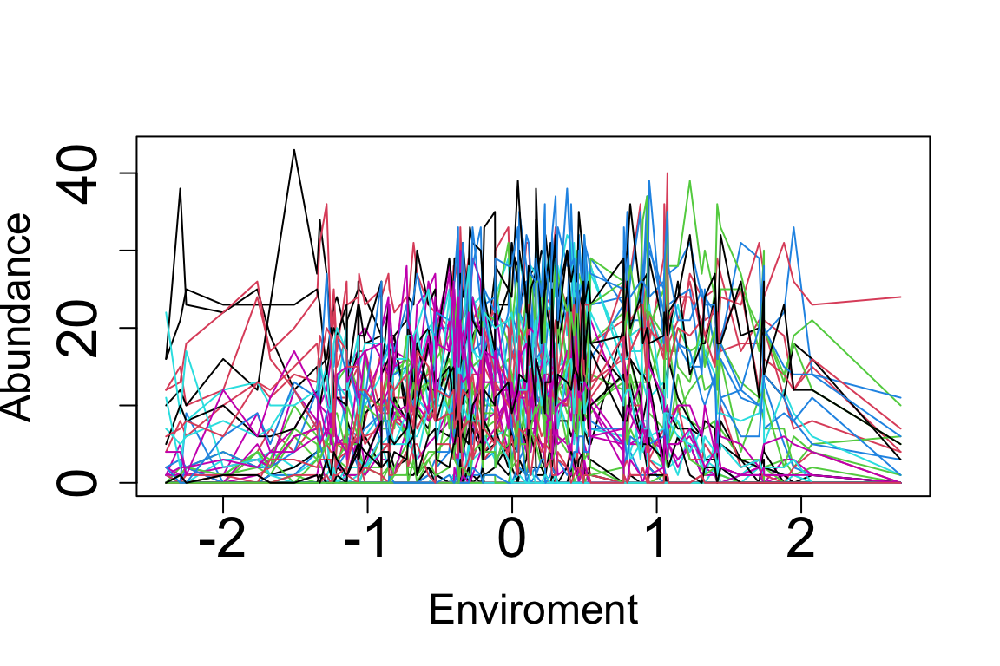
Finally, let’s calculate the 4th corner statistics for these data:
TraitEnvCor(Abundances,E,T, Chessel = TRUE)["Fourthcorner"]Fourthcorner
0.5365449 And now for the data without error, i.e., before the poisson trials:
TraitEnvCor(Y,E,T, Chessel = TRUE)["Fourthcorner"]Fourthcorner
0.5333836 Despite the error we observed once we transformed Y (values without error) into abundances (with error via the poisson trials), the bivariate correlations are pretty similar, indicating that these metrics are robust against sampling error in abundances. Note, however, that we only used one predictor which was the one used to simulate the data to begin with; empirical data are much more complex than that.
Finally, note that, as such, bivariate correlations are calculated in the same way regardless if the data are presence-absence or abundance; biomass data could be also considered.
Let’s go back to our stacked model:
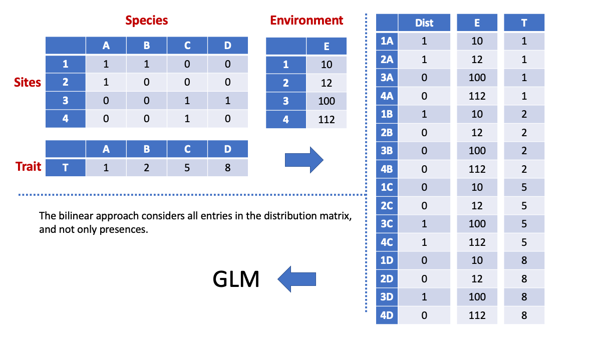
And now let’s get back to our stacked approach using again the simplest example we used earlier. Let’s enter the data again to make sure that we have the same data.
Distribution <- as.matrix(rbind(c(1,1,0,0),c(1,0,0,0),c(0,0,1,1),c(0,0,1,0)))
T <- c(1,2,5,8)
E <- c(10,12,100,112)
n.species <- ncol(Distribution)
n.sites <- nrow(Distribution)
Dist.stacked <- as.vector(Distribution)
E.stacked <- rep(1, n.species) %x% scale(E)
T.stacked <- scale(T) %x% rep(1, n.sites)There are two ways in which we can code the analysis. Using the stacked way or using a kronecker product. The kronecker product stacks the data in the same way but it’s a bit more “cryptic” and demonstrating the stacking is then easier by using simple coding. The stacked GLM below estimates the statistical interaction between Environment and Traits only. Note that the distribution for our ficitional example above is for presence and absences, hence we will use a binomial link-function (i.e., logistic regression). This can be referred as to the bilinear model by Gabriel (1998) which is rarely used in ecology but can provide a good introduction to what “stacking” means which is critical to understand more complex GLMs.
Using the stacked vectors above, we have:
predictor <- E.stacked * T.stacked
model <- glm(Dist.stacked ~ predictor,family=binomial(link=logit))
summary(model)
Call:
glm(formula = Dist.stacked ~ predictor, family = binomial(link = logit))
Deviance Residuals:
Min 1Q Median 3Q Max
-2.1282 -0.5101 -0.2570 0.7417 1.3162
Coefficients:
Estimate Std. Error z value Pr(>|z|)
(Intercept) -0.9160 0.7681 -1.193 0.2330
predictor 2.4991 1.1975 2.087 0.0369 *
---
Signif. codes: 0 '***' 0.001 '**' 0.01 '*' 0.05 '.' 0.1 ' ' 1
(Dispersion parameter for binomial family taken to be 1)
Null deviance: 21.170 on 15 degrees of freedom
Residual deviance: 13.597 on 14 degrees of freedom
AIC: 17.597
Number of Fisher Scoring iterations: 5The stacking we saw can be easily done using matrix algebra (the early presentation is helpful to understand the principles though). To do it in algebra, we use the kronecker product as follows:
\[Y= T\otimes E\]
As such, the bilinear model is testing the statistical interaction between traits and environmental variables.
which in R becomes:
predictor2 <- T %x% E
model <- glm(Dist.stacked ~ predictor,family=binomial(link=logit))
summary(model)
Call:
glm(formula = Dist.stacked ~ predictor, family = binomial(link = logit))
Deviance Residuals:
Min 1Q Median 3Q Max
-2.1282 -0.5101 -0.2570 0.7417 1.3162
Coefficients:
Estimate Std. Error z value Pr(>|z|)
(Intercept) -0.9160 0.7681 -1.193 0.2330
predictor 2.4991 1.1975 2.087 0.0369 *
---
Signif. codes: 0 '***' 0.001 '**' 0.01 '*' 0.05 '.' 0.1 ' ' 1
(Dispersion parameter for binomial family taken to be 1)
Null deviance: 21.170 on 15 degrees of freedom
Residual deviance: 13.597 on 14 degrees of freedom
AIC: 17.597
Number of Fisher Scoring iterations: 5Note that the two ways to run the model results in the exact same estimates. Here we should interpret the slope for the model as the strength between trait and environment, i.e., \(\beta_1 = 2.4991\). Obviously the bilinear model can be easily extended to any class of GLMs as well depending on the nature of the response variable (e.g., poisson, negative binomial, etc; more on these below).
Note also that we could have considered multiple traits and environments (as long as we have enough degrees of freedom).
Stacked or bilinear model on the Aravo data set
Let’s apply the Aravo data set we saw early here. We will reduce the environmental matrix by removing the qualitative variables. These can be easily accommodated but for the sake of speed, we will reduce it.
E <- aravo$env[,c("Aspect","Slope","Snow")]
E <- as.matrix(E)
T <- as.matrix(aravo$trait)Now we apply the kronecker product using the base function kronecker rather than %x% that we saw early. This function generate names for each column of the matrix (i.e., interactions between each trait and predictor). The columns contain all possible two by two (pairwise) combinations of traits and environmental features.
TE <- kronecker(T, E, make.dimnames = TRUE)
dim(TE)[1] 6150 24colnames(TE) [1] "Height:Aspect" "Height:Slope" "Height:Snow" "Spread:Aspect"
[5] "Spread:Slope" "Spread:Snow" "Angle:Aspect" "Angle:Slope"
[9] "Angle:Snow" "Area:Aspect" "Area:Slope" "Area:Snow"
[13] "Thick:Aspect" "Thick:Slope" "Thick:Snow" "SLA:Aspect"
[17] "SLA:Slope" "SLA:Snow" "N_mass:Aspect" "N_mass:Slope"
[21] "N_mass:Snow" "Seed:Aspect" "Seed:Slope" "Seed:Snow" Because we have abundance data, let’s run the GLM using the poisson model (log link function) and the negative binomial which may work better when data are overdispersed (e.g., too many zeros, i.e., absences).
Dist.stacked <- as.vector(as.matrix(aravo$spe))
ColNames <- colnames(TE)
TE <- scale(TE) # so that slopes can be compared directly to one another
colnames(TE) <- ColNames
model.bilinear.poisson <- glm(Dist.stacked ~ TE,family="poisson")
library(MASS)
model.bilinear.negBinom <- glm.nb(Dist.stacked ~ TE)Let’s compare the two models:
c(BIC(model.bilinear.poisson),BIC(model.bilinear.negBinom))[1] 9310.771 8784.627The BIC suggests that negative binomial fits the data better (smaller BIC, better fit).
Model diagnostics for non-Gaussian models are challenging and often standard tools don’t provide a good way to assess quality of models. Let’s check model residuals using the more classic approach. sppVec below will be used to create a different color for each species.
# create a vector of species names compatible with the stacked model:
sppVec = rep(row.names(aravo$traits),each=nrow(aravo$spe))
plot(residuals(model.bilinear.negBinom),log(fitted(model.bilinear.negBinom)),col=as.numeric(factor(sppVec)),xlab="Fitted values [log scale]",ylab="residuals")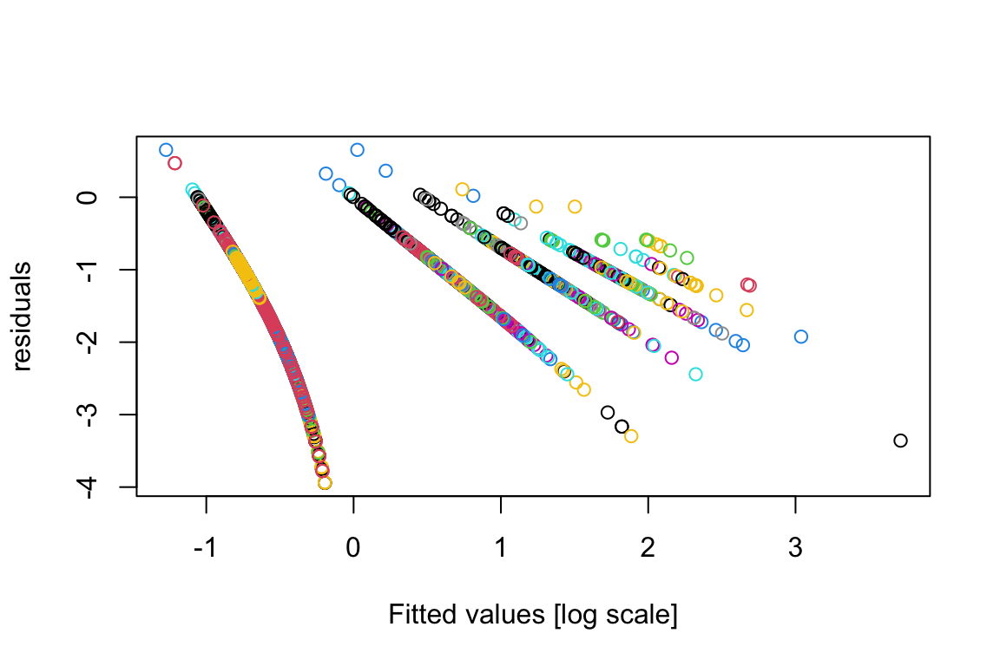
As we can see, the plot is pretty bad; and that’s a common feature for GLMs.
Dunn and Smyth (1996) developed a new class of residuals that allows a much better way to diagnose whether the model fits the data well. The package DHARMa implements the approach. A tutorial for this package and the package features can be found at: <a href = “https://cran.r-project.org/web/packages/DHARMa/vignettes/DHARMa.html”https://cran.r-project.org/web/packages/DHARMa/vignettes/DHARMa.html.
# install.packages("DHARMa")
library("DHARMa")This is DHARMa 0.4.6. For overview type '?DHARMa'. For recent changes, type news(package = 'DHARMa')DunnSmyth.res <- simulateResiduals(fittedModel = model.bilinear.negBinom, plot = F)
plot(DunnSmyth.res$scaledResiduals~log(fitted(model.bilinear.negBinom)),col=as.numeric(factor(sppVec)),xlab="Fitted values [log scale]",ylab="residuals")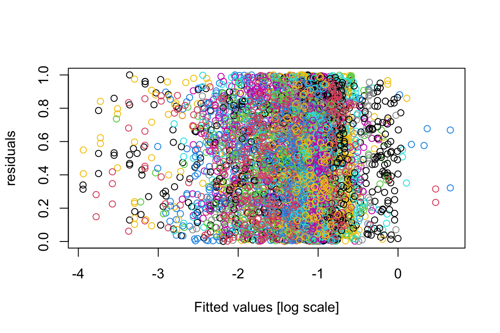
And now the Q-Q plot to assess residual normality:
plotQQunif(DunnSmyth.res)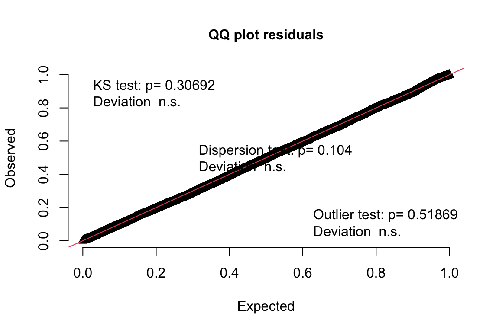
Just for illustration, let’s compare it with the Q-Q plot for the poisson model which had smaller support:
DunnSmyth.res.poisson <- simulateResiduals(fittedModel = model.bilinear.poisson, plot = F)
plotQQunif(DunnSmyth.res.poisson)DHARMa:testOutliers with type = binomial may have inflated Type I error rates for integer-valued distributions. To get a more exact result, it is recommended to re-run testOutliers with type = 'bootstrap'. See ?testOutliers for details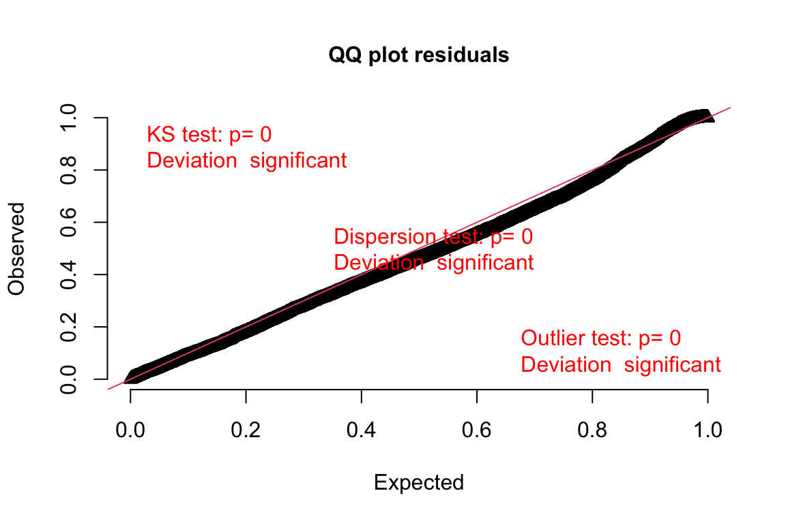
The poisson model doesn’t fit as well the expected line as the negative binomial model. As such, the negative binomial model fits better also with the assumption of normality.
We can use the package jtools to create model summaries and visualization for GLMs. You can find a good introduction to this package here:
https://cran.r-project.org/web/packages/jtools/vignettes/summ.html
# install.packages("jtools")
# install.packages("ggstance")
# install.packages("broom.mixed")
library(jtools)
summ(model.bilinear.negBinom)Error in glm.control(...) :
unused argument (family = list("Negative Binomial(0.5278)", "log", function (mu)
log(mu), function (eta)
pmax(exp(eta), .Machine$double.eps), function (mu)
mu + mu^2/.Theta, function (y, mu, wt)
2 * wt * (y * log(pmax(1, y)/mu) - (y + .Theta) * log((y + .Theta)/(mu + .Theta))), function (y, n, mu, wt, dev)
{
term <- (y + .Theta) * log(mu + .Theta) - y * log(mu) + lgamma(y + 1) - .Theta * log(.Theta) + lgamma(.Theta) - lgamma(.Theta + y)
2 * sum(term * wt)
}, function (eta)
pmax(exp(eta), .Machine$double.eps), expression({
if (any(y < 0)) stop("negative values not allowed for the negative binomial family")
n <- rep(1, nobs)
mustart <- y + (y == 0)/6
}), function (mu)
all(mu > 0), function (eta)
TRUE, function (object, nsim)
{
ftd <- fitted(object)
rnegbin(nsim * length(ftd), ftd, .Theta)
}))Warning: Something went wrong when calculating the pseudo R-squared. Returning NA
instead.| Observations | 6150 |
| Dependent variable | Dist.stacked |
| Type | Generalized linear model |
| Family | Negative Binomial(0.5278) |
| Link | log |
| 𝛘²(NA) | NA |
| Pseudo-R² (Cragg-Uhler) | NA |
| Pseudo-R² (McFadden) | NA |
| AIC | 8609.80 |
| BIC | 8784.63 |
| Est. | S.E. | z val. | p | |
|---|---|---|---|---|
| (Intercept) | -1.27 | 0.03 | -40.67 | 0.00 |
| TEHeight:Aspect | 0.09 | 0.11 | 0.81 | 0.42 |
| TEHeight:Slope | 0.08 | 0.05 | 1.56 | 0.12 |
| TEHeight:Snow | -0.07 | 0.11 | -0.69 | 0.49 |
| TESpread:Aspect | 0.06 | 0.10 | 0.56 | 0.58 |
| TESpread:Slope | 0.07 | 0.06 | 1.18 | 0.24 |
| TESpread:Snow | -0.38 | 0.10 | -3.82 | 0.00 |
| TEAngle:Aspect | 0.05 | 0.11 | 0.50 | 0.62 |
| TEAngle:Slope | 0.21 | 0.07 | 2.99 | 0.00 |
| TEAngle:Snow | -0.35 | 0.10 | -3.52 | 0.00 |
| TEArea:Aspect | 0.05 | 0.12 | 0.36 | 0.72 |
| TEArea:Slope | 0.01 | 0.06 | 0.16 | 0.87 |
| TEArea:Snow | -0.24 | 0.12 | -1.90 | 0.06 |
| TEThick:Aspect | -0.01 | 0.09 | -0.09 | 0.93 |
| TEThick:Slope | 0.10 | 0.05 | 2.09 | 0.04 |
| TEThick:Snow | -0.17 | 0.09 | -1.91 | 0.06 |
| TESLA:Aspect | 0.45 | 0.19 | 2.43 | 0.02 |
| TESLA:Slope | -0.31 | 0.14 | -2.19 | 0.03 |
| TESLA:Snow | -0.42 | 0.15 | -2.81 | 0.00 |
| TEN_mass:Aspect | -0.60 | 0.19 | -3.10 | 0.00 |
| TEN_mass:Slope | -0.06 | 0.15 | -0.38 | 0.70 |
| TEN_mass:Snow | 0.67 | 0.15 | 4.54 | 0.00 |
| TESeed:Aspect | 0.30 | 0.11 | 2.80 | 0.01 |
| TESeed:Slope | 0.11 | 0.05 | 2.21 | 0.03 |
| TESeed:Snow | -0.50 | 0.11 | -4.39 | 0.00 |
| Standard errors: MLE |
The package jtools offers a variety of table and graphical outputs and is worth exploring. Here we will produce a confidence interval plot for each slope. This will take a moment (one minute or less):
plot_summs(model.bilinear.negBinom, scale = TRUE)Error in glm.control(...) :
unused argument (family = list("Negative Binomial(0.5278)", "log", function (mu)
log(mu), function (eta)
pmax(exp(eta), .Machine$double.eps), function (mu)
mu + mu^2/.Theta, function (y, mu, wt)
2 * wt * (y * log(pmax(1, y)/mu) - (y + .Theta) * log((y + .Theta)/(mu + .Theta))), function (y, n, mu, wt, dev)
{
term <- (y + .Theta) * log(mu + .Theta) - y * log(mu) + lgamma(y + 1) - .Theta * log(.Theta) + lgamma(.Theta) - lgamma(.Theta + y)
2 * sum(term * wt)
}, function (eta)
pmax(exp(eta), .Machine$double.eps), expression({
if (any(y < 0)) stop("negative values not allowed for the negative binomial family")
n <- rep(1, nobs)
mustart <- y + (y == 0)/6
}), function (mu)
all(mu > 0), function (eta)
TRUE, function (object, nsim)
{
ftd <- fitted(object)
rnegbin(nsim * length(ftd), ftd, .Theta)
}))Warning: Something went wrong when calculating the pseudo R-squared. Returning NA
instead.Registered S3 methods overwritten by 'broom':
method from
tidy.glht jtools
tidy.summary.glht jtoolsLoading required namespace: broom.mixed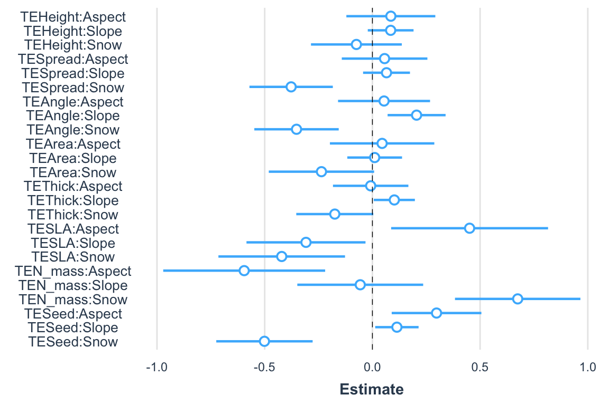
One needs to be careful when interpreting these confidence intervals as they were produced parametrically and they may be biased as we discussed in the section on statistical hypothesis testing. Again, this is a strong area of development among quantitative ecologists; but we haven’t yet derived unified views on this issue.
We can also plot the coefficients building:
cf <- coefficients(model.bilinear.negBinom)[-1] # removes the intercept
cfInter <- matrix(t(cf),nrow=ncol(E))
colnames(cfInter) <- colnames(T)
rownames(cfInter) <- colnames(E)
cfInter Height Spread Angle Area Thick SLA
Aspect 0.08562528 0.05659044 0.05406318 0.04512061 -0.008000594 0.4512878
Slope 0.08477186 0.06555292 0.20518548 0.01057746 0.101762893 -0.3083102
Snow -0.07428183 -0.37726596 -0.35230429 -0.23652105 -0.174573655 -0.4210057
N_mass Seed
Aspect -0.59525146 0.2977853
Slope -0.05644061 0.1137532
Snow 0.67458707 -0.5011741# install.packages("lattice")
library(lattice)
a <- max(abs(cfInter))
colort = colorRampPalette(c("blue","white","red"))
levelplot(cfInter, xlab="traits",ylab="environment", col.regions=colort(100), at=seq(-a, a, length=100))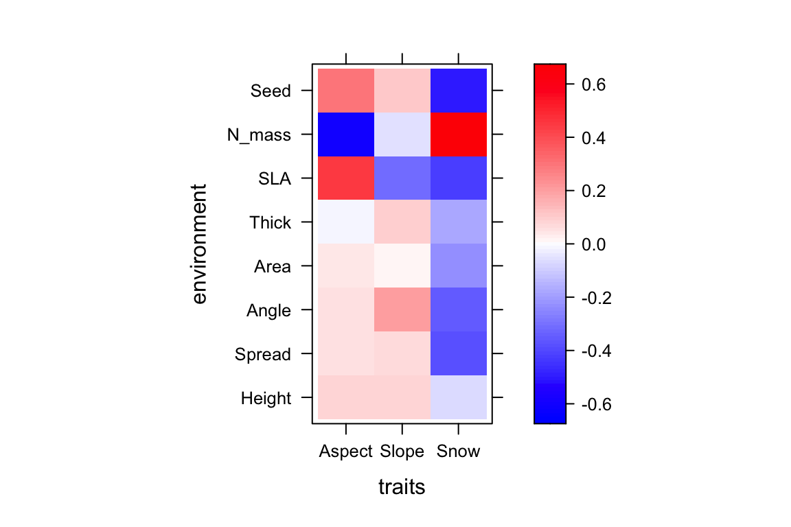
The bilinear model estimates and test for the interactions between traits and environmental features in a single model. That allows for partial slopes to be estimated (i.e., in which the effects of one trait-environment interaction is independent of the others as in standard linear regression models and GLMs). Understanding partial slopes is essential for inference and usually covered in Intro statistics for biologists/ecologists under multiple regression. A standard definition is “The partial slope in multiple regression (or GLM) is the slope of the relationship between a predictor variable that is independent of the other predictor variables and the criterion. It is also the regression coefficient for the predictor variable in question.” (https://onlinestatbook.com/2/glossary/partial_slope.html).
Now, we may want to consider also the main effects of each environmental feature and traits in addition to their interactions. This is the model implemented in Jamil et al. (2013) and Brown et al. (2014). The Brown model et al. model is:
\[{ln(Y_{ij}) = \beta_0\ +\beta_1env_i\ +\beta_2env_i^2\ +\beta_3spp_j\ +\beta_4(env \times\ trait)_{ij}\ }\] where \(\beta_0\) is the overall intercept for the model, \(\beta_1env_i\) contains the slopes for each environmental variable, the model also consider square terms for the environmental variables \(\beta_2env_i^2\), \(\beta_3spp_j\) contains species-specific intercept terms which allows predictions for each species separately, \(\beta_4(env \times\ trait)_{ij}\) contains the slopes for each trait by environment interaction (the 4th corner slopes). Whereas Brown et al. treated \(spp_j\) as fixed, Jamil et al. (2013) treated as random (more on this later). I’ve followed the formulation notation given in Brown et al. to facilitate understanding their paper; but we could easily change by the notation used in the mixed model selection (following Gelman and Hill 2007).
By setting species-specific intercept terms (i.e., \(\beta_3spp_j\)) we can predict species in their appropriate scale of abundance variation. As such, we can use these types of models to predict species distributions. This sort of modelling is becoming the standard for predicting multiple species because it considers multiple types of predictors (trait, environments, non-linearities) and their interactions. Single species models, for instance, can’t consider trait variation and the interactions of traits and environment. As such, stacked models are extremely powerful tools even for modelling single species distributions.
The Brown et al. model can be fit using the package mvabund as follows:
# install.packages("mvabund")
library(mvabund)
glm.trait.res <- traitglm(as.matrix(aravo$spe),E,T,family="negative.binomial",col.intercepts=TRUE)
BIC(glm.trait.res) l
8104.818 All coefficients of the model can be retrieved by:
coefficients(glm.trait.res) l
(Intercept) -1.939671753
sppAlch.glau -0.054831143
sppAlch.pent 0.024330521
sppAlch.vulg -0.155929316
sppAlop.alpi 0.069840352
sppAndr.brig -0.144086942
sppAndr.vita -0.117405506
sppAnte.carp -0.105193294
sppAnte.dioi -0.259135963
sppAnth.alpe -0.404567216
sppAnth.nipp -0.069393787
sppArni.mont -0.265964212
sppAste.alpi -0.324558310
sppAven.vers -0.108786793
sppBart.alpi -0.332898371
sppCamp.sche -0.008108304
sppCard.alpi -0.136528887
sppCare.foet 0.027908430
sppCare.parv -0.174556575
sppCare.rosa -0.091371379
sppCare.rupe -0.182772040
sppCare.semp -0.112095430
sppCera.cera -0.171760014
sppCera.stri -0.021497460
sppCirs.acau -0.188888639
sppDrab.aizo -0.118690070
sppDrya.octo -0.358279264
sppErig.unif -0.059293913
sppFest.laev -0.365739677
sppFest.quad -0.105113832
sppFest.viol -0.058339848
sppGent.acau -0.181050369
sppGent.camp -0.134520188
sppGent.vern -0.044346876
sppGeum.mont 0.064963289
sppHeli.sede -0.217416821
sppHier.pili -0.138692435
sppHomo.alpi -0.207003373
sppKobr.myos -0.028361647
sppLeon.pyre 0.029558348
sppLeuc.alpi -0.003570705
sppLigu.muto -0.064014046
sppLloy.sero -0.284035626
sppLotu.alpi -0.144194010
sppLuzu.lute -0.193109208
sppMinu.sedo 0.021602219
sppMinu.vern -0.137286811
sppMyos.alpe -0.092884602
sppOmal.supi 0.033812911
sppOxyt.camp -0.233480701
sppOxyt.lapp -0.201732614
sppPhyt.orbi -0.327727501
sppPlan.alpi 0.066971460
sppPoa.alpi 0.095801892
sppPoa.supi -0.203286074
sppPoly.vivi -0.016324658
sppPote.aure 0.053779431
sppPote.cran -0.126165407
sppPote.gran -0.231501706
sppPuls.vern -0.096096734
sppRanu.kuep -0.020389979
sppSagi.glab -0.011366535
sppSali.herb 0.053863437
sppSali.reti -0.286340876
sppSali.retu -0.255645078
sppSali.serp -0.283448058
sppSaxi.pani -0.185168997
sppScab.luci -0.331712183
sppSedu.alpe -0.065750719
sppSemp.mont -0.074418068
sppSene.inca -0.162375900
sppSesl.caer -0.205203677
sppSibb.proc 0.019139245
sppSile.acau -0.179836450
sppTara.alpi -0.250167730
sppThym.poly -0.280189375
sppTrif.alpi -0.134717635
sppTrif.badi -0.322563479
sppTrif.thal -0.225527793
sppVero.alli -0.293989557
sppVero.alpi -0.100779079
sppVero.bell -0.011889063
Aspect 0.014997588
Slope 0.064347175
Snow -0.303043451
Aspect.squ 0.013997280
Slope.squ -0.047627887
Snow.squ -0.274070121
Aspect.Height -0.010645817
Aspect.Spread -0.070752741
Aspect.Angle -0.083977548
Aspect.Area -0.040276747
Aspect.Thick -0.082064700
Aspect.SLA 0.065782084
Aspect.N_mass -0.138709436
Aspect.Seed 0.042758169
Slope.Height -0.020464655
Slope.Spread 0.023128427
Slope.Angle -0.018699260
Slope.Area -0.027960323
Slope.Thick -0.012369639
Slope.SLA -0.108694248
Slope.N_mass 0.021179434
Slope.Seed 0.014142823
Snow.Height -0.209648151
Snow.Spread 0.049505713
Snow.Angle -0.188496204
Snow.Area -0.046298194
Snow.Thick 0.099956790
Snow.SLA 0.309130472
Snow.N_mass 0.317287032
Snow.Seed -0.169753499The overall intercept \(\beta_0=-1.9397\), the individual intercept for each species \(\beta_3spp_j\) are the coefficients above starting with spp; for instance, the individual slope for Alch.glau (1st species in the list) is \(\beta_3spp_1=-0.055\). The slopes for each environmental variable appear under the names we gave. For instance, the slope for aspect is \(\beta_1env_aspect=0.015\). Note that .squ in the coefficients are the slopes for the squared environmental terms; for instance \(\beta_2env_{snow}^2=-0.274\). Finally we have the 4th corner slopes. For instance, \(\beta_4(env \times\ trait)_{snow,seed\_mass}=-0.1698\). Remember that snow here refers to the mean snowmelt date. As such, communities with large seed masses (in average) are found in sites that have early snowmelt dates compared to sites with late snowmelt dates; these sites have communities that tend to have small seed masses in average.
Let’s understand this model by programming it from scratch. That’s really the best way to understand models; and whenever possible I try to demonstrate them from ‘scratch’; not always possible depending on the amount of operations (e.g., mixed models) and our abilities to understand large codes . But this one is simple enough that we can do it:
n.species <- ncol(aravo$spe)
n.communities <- nrow(aravo$spe)
n.env.variables <- ncol(E)
# repeats each trait to make it compatible (vectorized) with the stacked species distributions
traitVec <- T[rep(1:n.species,each=n.communities),]
# repeats each environmental variable to make it compatible (vectorized) with the stacked species distributions:
envVec <- matrix(rep(t(E),n.species),ncol=NCOL(E),byrow=TRUE)
# creates an intercept for each species:
species.intercepts <- rep(1:n.species,each=n.communities)
species.intercepts <- as.factor(species.intercepts)
mod <- as.formula("~species.intercepts-1")
species.intercepts <- model.matrix(mod)[,-1]
# the interaction terms:
TE <- kronecker(T, E, make.dimnames = TRUE)
# combining the predictors in a single matrix:
preds <- cbind(species.intercepts,envVec,envVec^2,TE)
# running the model
model.bilinear.negBinom.Brown <- glm.nb(Dist.stacked ~ preds)And as we can see, they are exactly the same model:
BIC(glm.trait.res) l
8104.818 BIC(model.bilinear.negBinom.Brown)[1] 8104.818We can easily adapt the graphical and diagnostic outputs for this model as well, but we won’t for simplicity.
summ(model.bilinear.negBinom)Error in glm.control(...) :
unused argument (family = list("Negative Binomial(0.5278)", "log", function (mu)
log(mu), function (eta)
pmax(exp(eta), .Machine$double.eps), function (mu)
mu + mu^2/.Theta, function (y, mu, wt)
2 * wt * (y * log(pmax(1, y)/mu) - (y + .Theta) * log((y + .Theta)/(mu + .Theta))), function (y, n, mu, wt, dev)
{
term <- (y + .Theta) * log(mu + .Theta) - y * log(mu) + lgamma(y + 1) - .Theta * log(.Theta) + lgamma(.Theta) - lgamma(.Theta + y)
2 * sum(term * wt)
}, function (eta)
pmax(exp(eta), .Machine$double.eps), expression({
if (any(y < 0)) stop("negative values not allowed for the negative binomial family")
n <- rep(1, nobs)
mustart <- y + (y == 0)/6
}), function (mu)
all(mu > 0), function (eta)
TRUE, function (object, nsim)
{
ftd <- fitted(object)
rnegbin(nsim * length(ftd), ftd, .Theta)
}))Warning: Something went wrong when calculating the pseudo R-squared. Returning NA
instead.| Observations | 6150 |
| Dependent variable | Dist.stacked |
| Type | Generalized linear model |
| Family | Negative Binomial(0.5278) |
| Link | log |
| 𝛘²(NA) | NA |
| Pseudo-R² (Cragg-Uhler) | NA |
| Pseudo-R² (McFadden) | NA |
| AIC | 8609.80 |
| BIC | 8784.63 |
| Est. | S.E. | z val. | p | |
|---|---|---|---|---|
| (Intercept) | -1.27 | 0.03 | -40.67 | 0.00 |
| TEHeight:Aspect | 0.09 | 0.11 | 0.81 | 0.42 |
| TEHeight:Slope | 0.08 | 0.05 | 1.56 | 0.12 |
| TEHeight:Snow | -0.07 | 0.11 | -0.69 | 0.49 |
| TESpread:Aspect | 0.06 | 0.10 | 0.56 | 0.58 |
| TESpread:Slope | 0.07 | 0.06 | 1.18 | 0.24 |
| TESpread:Snow | -0.38 | 0.10 | -3.82 | 0.00 |
| TEAngle:Aspect | 0.05 | 0.11 | 0.50 | 0.62 |
| TEAngle:Slope | 0.21 | 0.07 | 2.99 | 0.00 |
| TEAngle:Snow | -0.35 | 0.10 | -3.52 | 0.00 |
| TEArea:Aspect | 0.05 | 0.12 | 0.36 | 0.72 |
| TEArea:Slope | 0.01 | 0.06 | 0.16 | 0.87 |
| TEArea:Snow | -0.24 | 0.12 | -1.90 | 0.06 |
| TEThick:Aspect | -0.01 | 0.09 | -0.09 | 0.93 |
| TEThick:Slope | 0.10 | 0.05 | 2.09 | 0.04 |
| TEThick:Snow | -0.17 | 0.09 | -1.91 | 0.06 |
| TESLA:Aspect | 0.45 | 0.19 | 2.43 | 0.02 |
| TESLA:Slope | -0.31 | 0.14 | -2.19 | 0.03 |
| TESLA:Snow | -0.42 | 0.15 | -2.81 | 0.00 |
| TEN_mass:Aspect | -0.60 | 0.19 | -3.10 | 0.00 |
| TEN_mass:Slope | -0.06 | 0.15 | -0.38 | 0.70 |
| TEN_mass:Snow | 0.67 | 0.15 | 4.54 | 0.00 |
| TESeed:Aspect | 0.30 | 0.11 | 2.80 | 0.01 |
| TESeed:Slope | 0.11 | 0.05 | 2.21 | 0.03 |
| TESeed:Snow | -0.50 | 0.11 | -4.39 | 0.00 |
| Standard errors: MLE |
As mentioned earlier, we can get predicted models per species, making stacked models not only a community model but also considering information from multiple sources for single species distributions as well:
fitted.by.species <- matrix(glm.trait.res$fitted,n.communities,n.species)Predicted abundance values per species are in columns:
View(fitted.by.species)Species and sites are not likely to differ from one another randomly but rather have some sites more similar to others (or more different). We call this a hierarchical structure. For instance, sites that are more close to one another may have more similar values than sites further way. Or some species may be more similar in abundance than others, and so on.
When using linear models and GLMS, researchers often ignore the hierarchical structure of the data (some sites have more similar or differences in total abundances of species, some species have more similar or differences in their total abundances). As such, standard GLMs can generate biased variance estimates and increase the likelihood of committing type I errors (i.e., rejecting the statistical null hypothesis more often than set by alpha, i.e., significance level).
Although this is very interesting ecologically, it does bring some inferential challenges (parameter estimation and statistical hypothesis testing) when fitting statistical models. GLMM (Generalized Linear Mixed Models) are then used to deal with these issues. This paper by Harrison et al. (2018) provides a great Introduction to GLLMs for ecologists: https://www.ncbi.nlm.nih.gov/pmc/articles/PMC5970551/.
One common feature here is that species may differ in the way they are structured by environmental and/or trait variation. This can be well described by the Simpson’s paradox (Simpson 1951), which is defined “as a phenomenon in probability and statistics in which a trend appears in several groups of data but disappears or reverses when the groups are combined.”
Let’s understand this paradox by simulating some data (code not show here) and graphing it. This sort of demonstration has become somewhat common when explaining the utility of mixed model.
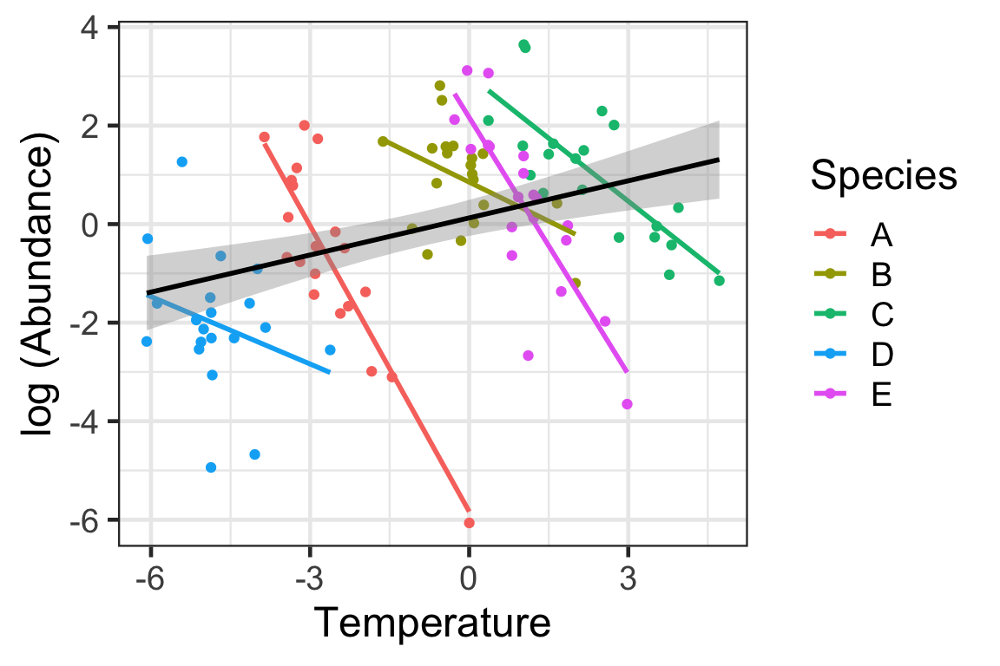
At first glance, the influence of temperature on abundance is positive if we consider the variation across all data points independent of the sites. However, within species, the influence of the environment is negative. As such, it is obvious that there is variation among species that can’t be explained by temperature alone. As such, we should consider a mixed model with temperature as a fixed factor (measured variable) and species as a random factor. Obviously one question of interest is why do species vary in their effects of temperature. But we don’t have other predictors that could assist in explaining these differences (e.g., physiology). Perhaps considering traits could assist in determining this variation (more on that later).
The data was saved in a matrix called data.Simpson. For simplicity, we will treat these data as normally distributed. The data were generated assuming normality any way; the goal here is just a demonstration.
Let’s analyze these data with a fixed model using a simple regression:
library(jtools)
lm.mod <- lm(abundance ~ scale(temperature),data=data.Simpson)
summ(lm.mod,scale = TRUE)| Observations | 100 |
| Dependent variable | abundance |
| Type | OLS linear regression |
| F(1,98) | 15.13 |
| R² | 0.13 |
| Adj. R² | 0.12 |
| Est. | S.E. | t val. | p | |
|---|---|---|---|---|
| (Intercept) | -0.08 | 0.18 | -0.48 | 0.63 |
| `scale(temperature)` | 0.69 | 0.18 | 3.89 | 0.00 |
| Standard errors: OLS; Continuous predictors are mean-centered and scaled by 1 s.d. |
As we can see, the overal influence of temperature is positive and significant, explaining 12% of the variation in abundance as a function of temperature (i.e., \(R^2=0.12\)).
Let’s consider now a mixed effect model that we estimate the variation in intercepts but still assume a common slope for all species. This is a common procedure in mixed model effects, i.e., starting with the simplest model. This fixed effect is coded as usually and the random effect is coded as (1|species), where 1 means the intercepts (common way to code the intercept in statistical models). As such, one intercept per species is estimated. The scale=TRUE in the function summ below reports the analysis with standardized predictors.
# install.packages("lme4")
library(lme4)Loading required package: Matrix
Attaching package: 'Matrix'The following objects are masked from 'package:tidyr':
expand, pack, unpacklm.mod.intercept <- lmer(abundance ~ temperature + (1|species),data=data.Simpson)
summ(lm.mod.intercept,scale = TRUE)| Observations | 100 |
| Dependent variable | abundance |
| Type | Mixed effects linear regression |
| AIC | 343.74 |
| BIC | 354.16 |
| Pseudo-R² (fixed effects) | 0.30 |
| Pseudo-R² (total) | 0.95 |
| Est. | S.E. | t val. | d.f. | p | |
|---|---|---|---|---|---|
| (Intercept) | -0.08 | 1.88 | -0.04 | 3.94 | 0.97 |
| temperature | -2.84 | 0.35 | -8.10 | 97.70 | 0.00 |
| p values calculated using Kenward-Roger standard errors and d.f. ; Continuous predictors are mean-centered and scaled by 1 s.d. |
| Group | Parameter | Std. Dev. |
|---|---|---|
| species | (Intercept) | 4.20 |
| Residual | 1.16 |
| Group | # groups | ICC |
|---|---|---|
| species | 5 | 0.93 |
Wow, what a change in the interpretation. By considering variation in intercepts across species, the fixed effect influence of temperature is now negative (as we should expect). Note, however, that we had information on a categorical factor, i.e, species, that could be used to estimate random effects related to variation among them. The variation (standard deviation) of intercepts among species is quite large in contrast to residuals; 4.20 against 1.16, respectively. The explanatory power of variation among intercepts make the \(R^2=0.95\) increase dramatically in contrast to the fixed model, demonstrating that the species random effect has a huge effect and ability to improve the model predictive power. We also find the ICC (Intra Class Correlation) which measures how similar the abundance is within groups, i.e., species. The ICC is 0.93, indicating that abundance values are more similar within than among species.
The variation in intercepts can be plotted as follows:
library(ggplot2)
intercepts <- coefficients(lm.mod.intercept)$species[,"(Intercept)"]
slopes <- coefficients(lm.mod.intercept)$species[,"temperature"]
lines <- data.frame(intercepts,slopes)
lines["species"] <- unique(data.Simpson[,"species"])
data.Simpson$pred <- predict(lm.mod.intercept)
ggplot() +
geom_point(data=data.Simpson,aes(x=temperature,y=abundance,color=species),size=1) +
geom_abline(aes(intercept = `(Intercept)`, slope = temperature),size = 1.5,as.data.frame(t(fixef(lm.mod.intercept)))) +
geom_abline(data = lines, aes(intercept=intercepts, slope=slopes, color=species)) +
theme_classic() +
xlab("Temperature") + ylab("log(Abundance)")Warning: Using `size` aesthetic for lines was deprecated in ggplot2 3.4.0.
ℹ Please use `linewidth` instead.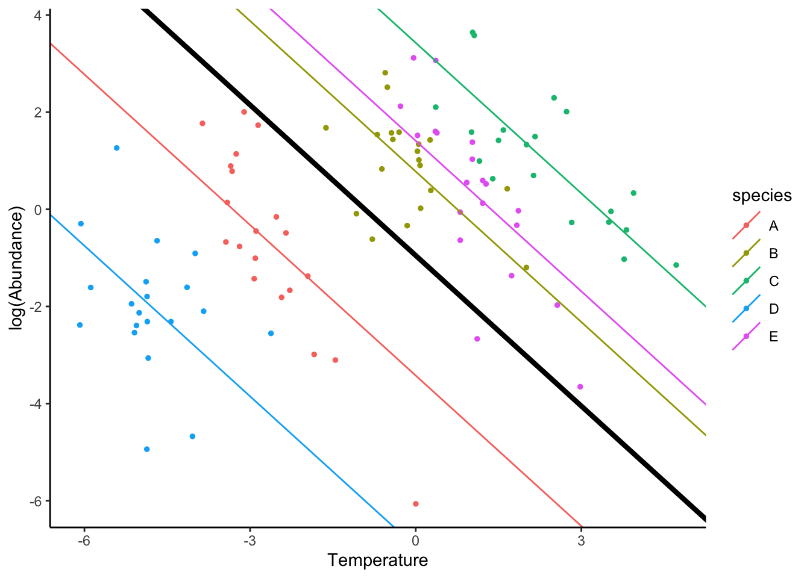
The black line represents the common model. Since only intercepts were allowed to vary, the species per slope are the same as the fixed model (after controlling for variation across species, which made the overall slope to be negative).
Finally, let’s estimate the random intercept and slope model. Here we estimate variation due to differences in intercepts and slopes across species:
lm.mod.interceptSlope <- lmer(abundance ~ temperature + (1 + temperature|species),data=data.Simpson)
summ(lm.mod.interceptSlope,scale = TRUE)| Observations | 100 |
| Dependent variable | abundance |
| Type | Mixed effects linear regression |
| AIC | 336.10 |
| BIC | 351.73 |
| Pseudo-R² (fixed effects) | 0.31 |
| Pseudo-R² (total) | 0.96 |
| Est. | S.E. | t val. | d.f. | p | |
|---|---|---|---|---|---|
| (Intercept) | 0.11 | 1.75 | 0.06 | 3.99 | 0.95 |
| temperature | -2.91 | 0.84 | -3.45 | 3.98 | 0.03 |
| p values calculated using Kenward-Roger standard errors and d.f. ; Continuous predictors are mean-centered and scaled by 1 s.d. |
| Group | Parameter | Std. Dev. |
|---|---|---|
| species | (Intercept) | 3.84 |
| species | temperature | 1.73 |
| Residual | 1.05 |
| Group | # groups | ICC |
|---|---|---|
| species | 5 | 0.93 |
The variation (standard deviation) in intercepts across species in much larger (3.84) than slopes (1.73). Is the predictive power between the two models significant? In order words, does a model that estimate independent slopes for each species explain more variation than one that only considers variation in intercepts? We can simply compare the BIC of both models:
c(BIC(lm.mod),BIC(lm.mod.intercept),BIC(lm.mod.interceptSlope))[1] 408.7963 356.1764 353.7488There is more support for the mixed model that considers variation in intercepts and slopes. One can also estimate the p-value that one model fits better than the other:
anova(lm.mod.intercept,lm.mod.interceptSlope)refitting model(s) with ML (instead of REML)Data: data.Simpson
Models:
lm.mod.intercept: abundance ~ temperature + (1 | species)
lm.mod.interceptSlope: abundance ~ temperature + (1 + temperature | species)
npar AIC BIC logLik deviance Chisq Df Pr(>Chisq)
lm.mod.intercept 4 346.41 356.83 -169.21 338.41
lm.mod.interceptSlope 6 340.30 355.93 -164.15 328.30 10.114 2 0.006365
lm.mod.intercept
lm.mod.interceptSlope **
---
Signif. codes: 0 '***' 0.001 '**' 0.01 '*' 0.05 '.' 0.1 ' ' 1Finally, we can plot the intercept and slope variation. The common fixed effect slope has been now estimated by pooling the variation among species, hence it become negative in contrast to the original fixed effect slope.
intercepts <- coefficients(lm.mod.interceptSlope)$species[,"(Intercept)"]
slopes <- coefficients(lm.mod.interceptSlope)$species[,"temperature"]
lines <- data.frame(intercepts,slopes)
lines["species"] <- unique(data.Simpson[,"species"])
data.Simpson$pred <- predict(lm.mod.intercept)
ggplot() +
geom_point(data=data.Simpson,aes(x=temperature,y=abundance,color=species),size=2) +
geom_abline(aes(intercept = `(Intercept)`, slope = temperature),size = 2,as.data.frame(t(fixef(lm.mod.interceptSlope)))) +
geom_abline(data = lines, aes(intercept=intercepts, slope=slopes, color=species),size = 2) +
theme_classic() +
xlab("Temperature") + ylab("log(Abundance)")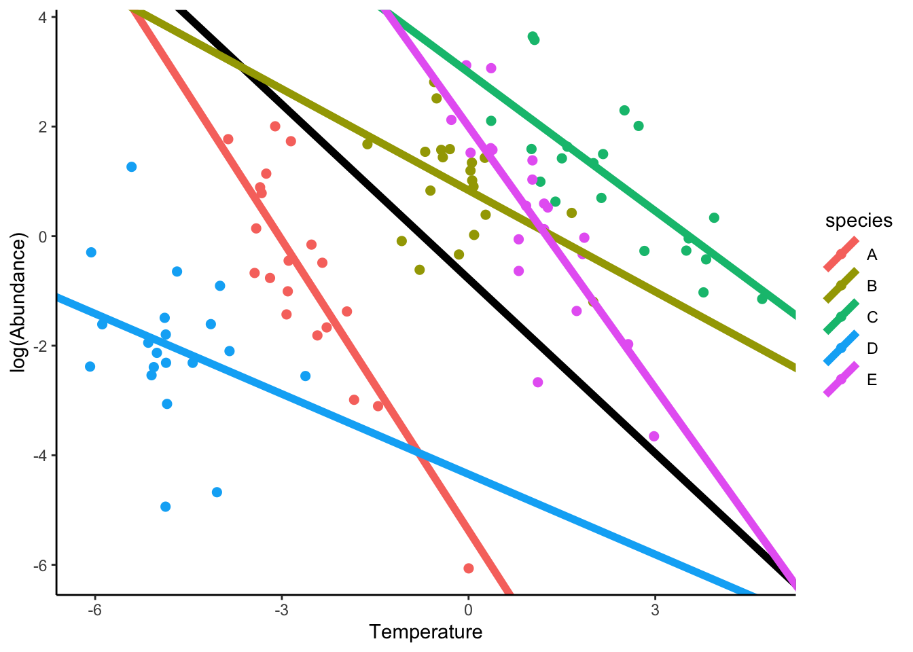
An extreme example pf the Simpson’s paradox
Let’s consider (just visually) an even more extreme case. The fixed effect is very strong but the within species effect is almost zero. Hopefully the “Simpson’s” examples here provide a good intuition on the importance of mixed models.
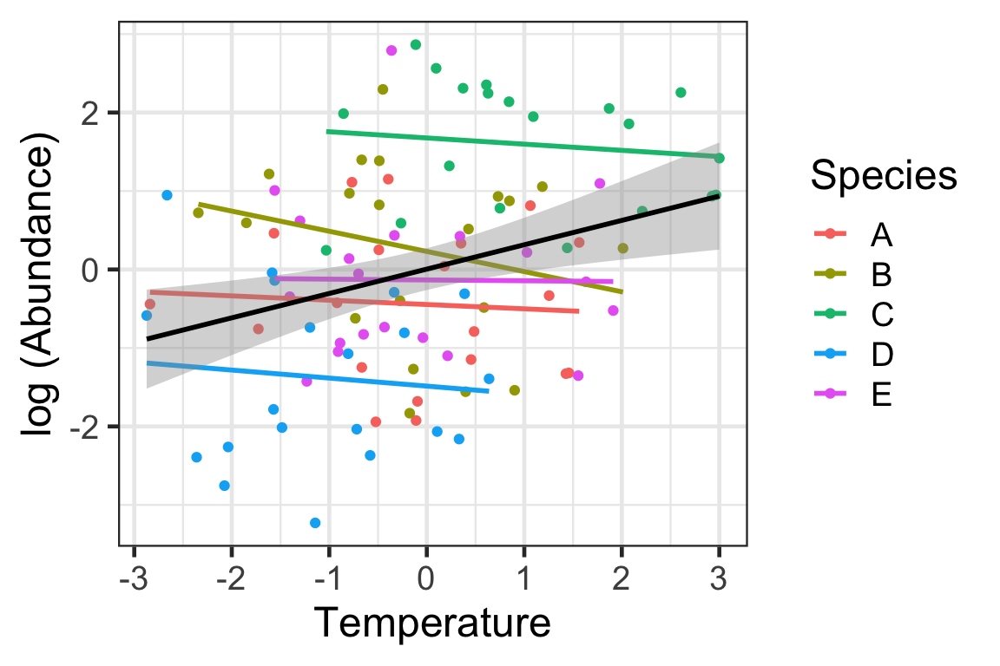
There are different ways that we can account for the potential random effects in community ecology data. Here we will review a few of the latest developments.
MLM stands for multilevel (i.e., hierarchical) models (MLM). The simplest of these models is the one introduced by Pollock et al. (2012) and is often referred in the ecological literature as MLM1 (see Miller et al. 2018). The model has the following form (following the notation of Gelman and Hill 2007; as in Miller et al. 2018). This is a model that considers species as a random effect while estimating variation in both intercepts and slopes as the last model in the previous session (Simpson’s paradox)
\[{ln(Y_{i}) = \alpha\ +a_{spp[i]}\ +\beta_{12}env_{site[i]}\times trait_{spp[i]} + (\beta_1+c_{spp[i]})env_{site[i]}+e_i}\] \(a,c \sim Gaussian(0,\sigma_a^2,\sigma_c^2,\rho_{ac})\) \(e \sim Gaussian(0,\sigma_e^2)\)
Note that we changed the notation of Brown et al. \(ij\) that served as an index for the \(i^{th}\) site and \(j^{th}\) species to simply one index \(i\) since we are using a stacked model anyway, i.e., only rows for \(Y_{i}\) and one column (i.e., stacked species distributions). As such, the functions \(spp[i]\) and \(site[i]\) map row i onto the corresponding species and sites. \(\beta_{12}\) contains the slopes for the interactions between environment and trait. The fixed effect \(\alpha\) gives the overall average abundance of species among sites (one overall intercept), and the fixed effect \(\beta_{1}\) gives the mean response of species to the different environmental variables. Random effect \(a_{spp[i]}\) allows different species to have different overall abundance (i.e., sum of abundances across species; random intercept model across species), and random effect \(c_{spp[i]}\) allows different species to have different responses to the environmental variables (i.e., random slope model across species). \(a_{spp[i]}\) and \(c_{spp[i]}\) have means zero and variances \(\sigma_a^2\) and \(\sigma_c^2\) (referred as to hyperparameters in mixed model lingo), with \(\rho_{ac}\) denoting the correlation between \(a_{spp[i]}\) and \(c_{spp[i]}\) (i.e., species intercepts and species slopes for the environment can correlate). Finally,random effect \(e_i\) gives observation-level variance; this is necessary here to allow for overdispersion (Harisson, 2014). We can also use the negative binomial as we saw earlier. Note that we are assuming hierarchical variation in variance and not covariance (e.g., phylogenetic and spatial autocorrelation). One step at the time.
Let’s start by setting an appropriate data structure to run the mixed model. To make the coding more manageable we will consider here only one trait and one environment. The code can be easily generalized for multiple traits and environments. We found early a strong interaction between seed mass and snow in which species with greater seed mass tended to be found in sites with small levels of snow (i.e., a negative correlation between snow and seed mass).
For simplicity, let’s load the aravo data again:
library(ade4)
data(aravo)
E <- aravo$env[,c("Aspect","Slope","Snow")]
E <- as.matrix(E)
T <- as.matrix(aravo$trait)
Dist.stacked <- as.vector(as.matrix(aravo$spe))
n.species <- ncol(aravo$spe)
n.communities <- nrow(aravo$spe)
n.env.variables <- ncol(E)# to code for observation-level variance:
obs <- 1:(n.species*n.communities)
# to code for species (as we saw earlier to plot residuals):
species <- rep(row.names(aravo$traits),each=nrow(aravo$spe))
sites <- rep(row.names(aravo$spe),each=ncol(aravo$spe))
# standardizing the data:
seed.mass <- scale(T[rep(1:n.species,each=n.communities),"Seed"])
snow.melt.days <- scale(matrix(rep(t(E[,"Snow"]),n.species),ncol=1,byrow=TRUE))
data.df <- data.frame(abundance=Dist.stacked,snow.melt.days,seed.mass,species,sites,obs)Let’s see the data frame:
View(data.df)Let’s start by fitting a glm:
glm.mod <- glm(abundance ~ snow.melt.days + snow.melt.days:seed.mass,data=data.df, family = "poisson")
summ(glm.mod,scale = TRUE)| Observations | 6150 |
| Dependent variable | abundance |
| Type | Generalized linear model |
| Family | poisson |
| Link | log |
| 𝛘²(2) | 56.18 |
| Pseudo-R² (Cragg-Uhler) | 0.01 |
| Pseudo-R² (McFadden) | 0.01 |
| AIC | 9421.91 |
| BIC | 9442.08 |
| Est. | S.E. | z val. | p | |
|---|---|---|---|---|
| (Intercept) | -1.17 | 0.02 | -50.74 | 0.00 |
| snow.melt.days | -0.10 | 0.02 | -4.20 | 0.00 |
| snow.melt.days:seed.mass | -0.14 | 0.02 | -6.39 | 0.00 |
| Standard errors: MLE; Continuous predictors are mean-centered and scaled by 1 s.d. |
Despite the very low \(R^2=0.01\), the coefficiences are all significant and negative.
Let’s run the model. Below, both intercepts (coded as 1) and slopes for snow.melt.days (coded as env) are allowed to vary among species (i.e., (1 + env|species)) and we also allow
MLM1.mod <- glmer(abundance ~ snow.melt.days + snow.melt.days:seed.mass + (1 + snow.melt.days|species) + (1 | obs), family = "poisson", control=glmerControl(calc.derivs=F), nAGQ = 0, data=data.df)
summ(MLM1.mod,scale = TRUE)| Observations | 6150 |
| Dependent variable | abundance |
| Type | Mixed effects generalized linear model |
| Family | poisson |
| Link | log |
| AIC | 7335.48 |
| BIC | 7382.55 |
| Pseudo-R² (fixed effects) | 0.09 |
| Pseudo-R² (total) | 0.65 |
| Est. | S.E. | z val. | p | |
|---|---|---|---|---|
| (Intercept) | -2.12 | 0.17 | -12.37 | 0.00 |
| snow.melt.days | -0.72 | 0.13 | -5.51 | 0.00 |
| snow.melt.days:seed.mass | -0.08 | 0.09 | -0.84 | 0.40 |
| ; Continuous predictors are mean-centered and scaled by 1 s.d. |
| Group | Parameter | Std. Dev. |
|---|---|---|
| obs | (Intercept) | 0.47 |
| species | (Intercept) | 1.46 |
| species | snow.melt.days | 1.08 |
| Group | # groups | ICC |
|---|---|---|
| obs | 6150 | 0.07 |
| species | 82 | 0.63 |
The variation among observations (residuals) is not relevant here; we used it to allow for potential overdispersion in abundance (i.e., variance of abundance much greater than the mean). Note that both the intercept and slopes contribute more or less to the same amount of variation (intercept sd=1.46 and slopes = 1.08), indicating that an intercept and slope mixed model is the most appropriate model. We could have fit the two models and tested as before we saw early in the Simpson’s paradox section. Note the huge increase in \(R^2=0.65\), demonstrating that considering a random structure is much better. The coefficient of snow.melt.days remains negative indicating that most species and their variation are negative despite the potential for some species to increase their abundances for large values of snow.melt.days. We will see this below.
The residual against the predicted values provide a good indication that the model is appropriate:
library(DHARMa)
DunnSmyth.res <- simulateResiduals(fittedModel = MLM1.mod, plot = F)
plot(DunnSmyth.res$scaledResiduals~log(fitted(MLM1.mod)),col=as.numeric(factor(species)),xlab="Fitted values [log scale]",ylab="residuals")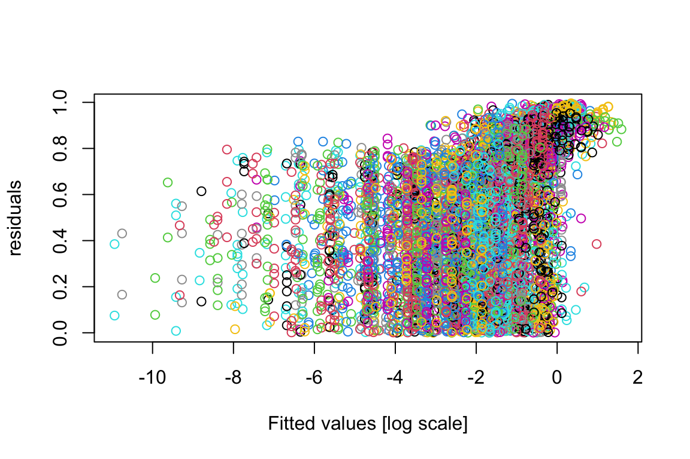
And now the Q-Q plot to assess residual normality:
plotQQunif(DunnSmyth.res)DHARMa:testOutliers with type = binomial may have inflated Type I error rates for integer-valued distributions. To get a more exact result, it is recommended to re-run testOutliers with type = 'bootstrap'. See ?testOutliers for details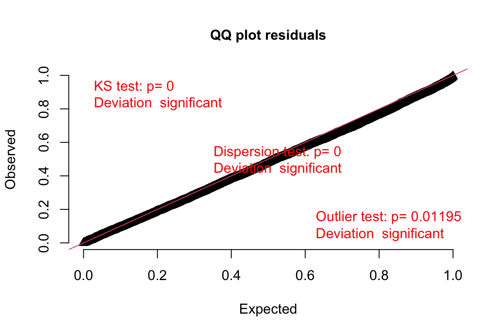
Note that the Kolmogorov-Smirnov (KS) provides indication that the residuals cannot be assumed to be normal. That said, the distribution of residuals looks somewhat on the expected. The KS becomes quite significant because of the large number of data points. Finally, GLMs and GLMMs tend to be quite robust even when residuals are not normal.
Intercepts in a poisson model are log of species abundances not explained by the predictors model, i.e., when we set them “manually” to take values of zero. Perhaps some sites are more productive than others and we did not measure trait or environmental variables that could account for the slope and intercept variation variation; but the random effects is telling us that there is something we are potentially missing to explain their variation.
Moreover, the random effect indicates that species slopes for the environment are strongly and positively correlated with the species intercepts (\(\rho_{ac}=0.73\)). We can plot the intercepts against slopes:
plot(coefficients(MLM1.mod)$species[,"(Intercept)"],coefficients(MLM1.mod)$species[,"snow.melt.days"],xlab="species intercepts", ylab="species environmental slopes")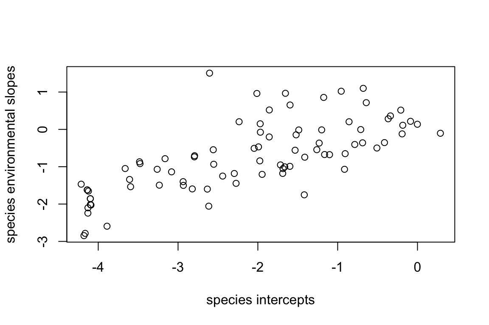
\(\rho_{ac}\) does not appear in summ(MLM1.mod) but can be found in summary(MLM1.mod) intead or calculated directly:
summary(MLM1.mod)Generalized linear mixed model fit by maximum likelihood (Adaptive
Gauss-Hermite Quadrature, nAGQ = 0) [glmerMod]
Family: poisson ( log )
Formula: abundance ~ snow.melt.days + snow.melt.days:seed.mass + (1 +
snow.melt.days | species) + (1 | obs)
Data: data.df
Control: glmerControl(calc.derivs = F)
AIC BIC logLik deviance df.resid
7335.5 7382.6 -3660.7 7321.5 6143
Scaled residuals:
Min 1Q Median 3Q Max
-1.6289 -0.4400 -0.2650 -0.0639 7.6016
Random effects:
Groups Name Variance Std.Dev. Corr
obs (Intercept) 0.2221 0.4712
species (Intercept) 2.1201 1.4560
snow.melt.days 1.1671 1.0803 0.73
Number of obs: 6150, groups: obs, 6150; species, 82
Fixed effects:
Estimate Std. Error z value Pr(>|z|)
(Intercept) -2.11504 0.17095 -12.372 < 2e-16 ***
snow.melt.days -0.71798 0.13037 -5.507 3.64e-08 ***
snow.melt.days:seed.mass -0.07552 0.09024 -0.837 0.403
---
Signif. codes: 0 '***' 0.001 '**' 0.01 '*' 0.05 '.' 0.1 ' ' 1
Correlation of Fixed Effects:
(Intr) snw.m.
snw.mlt.dys 0.730
snw.mlt.d:. 0.010 0.015 cor(coefficients(MLM1.mod)$species[,"(Intercept)"],coefficients(MLM1.mod)$species[,"snow.melt.days"])[1] 0.7163168Although the fixed-only effect model run earlier (glm.mod) indicated a significant correlation between snowmelt date and seed mass in driving species distributions, this effect is no longer relevant once the random effects are considered:
summary(glm.mod)
Call:
glm(formula = abundance ~ snow.melt.days + snow.melt.days:seed.mass,
family = "poisson", data = data.df)
Deviance Residuals:
Min 1Q Median 3Q Max
-1.2804 -0.7946 -0.7868 -0.6822 4.3659
Coefficients:
Estimate Std. Error z value Pr(>|z|)
(Intercept) -1.16767 0.02301 -50.744 < 2e-16 ***
snow.melt.days -0.09714 0.02313 -4.199 2.68e-05 ***
snow.melt.days:seed.mass -0.14286 0.02237 -6.387 1.70e-10 ***
---
Signif. codes: 0 '***' 0.001 '**' 0.01 '*' 0.05 '.' 0.1 ' ' 1
(Dispersion parameter for poisson family taken to be 1)
Null deviance: 6552.0 on 6149 degrees of freedom
Residual deviance: 6495.8 on 6147 degrees of freedom
AIC: 9421.9
Number of Fisher Scoring iterations: 6This indicates that the random variation across species can account for the initial relationship between snow.melt.days and seed mass. Note that the importance of snow.melt.days remains relevant in driving species abundances across sites, but (again) not its interaction with seed mass.
Let’s plot regression models per species:
intercepts <- coefficients(MLM1.mod)$species[,"(Intercept)"]
slopes <- coefficients(MLM1.mod)$species[,"snow.melt.days"]
lines <- data.frame(intercepts,slopes)
lines["species"] <- unique(data.df[,"species"])
data.df$pred <- predict(MLM1.mod)
ggplot(data=data.df) +
geom_point(data=data.df,aes(x=snow.melt.days,y=pred,color=species),size=1) +
geom_abline(data = lines, aes(intercept=intercepts, slope=slopes, color=species),size = 2) +
geom_abline(aes(intercept = `(Intercept)`, slope = snow.melt.days),size = 2,as.data.frame(t(fixef(MLM1.mod)))) +
theme_classic() +
xlab("snow.melt.days") + ylab("log(Abundance)")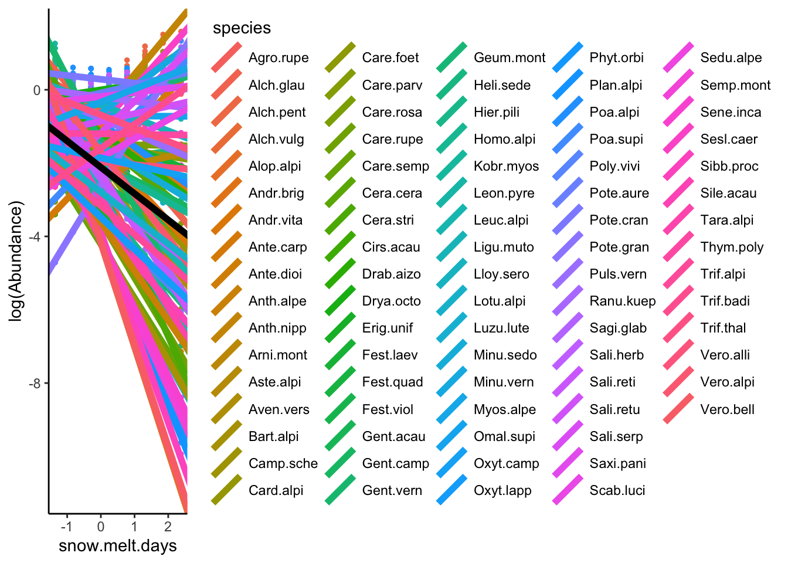
Finally, the GLMM has good predictive power (relative smaller confidence intervals and large \(R^2=0.51\):
# install.packages("ggeffects")
library(ggeffects)
plot(ggpredict(MLM1.mod, "snow.melt.days"))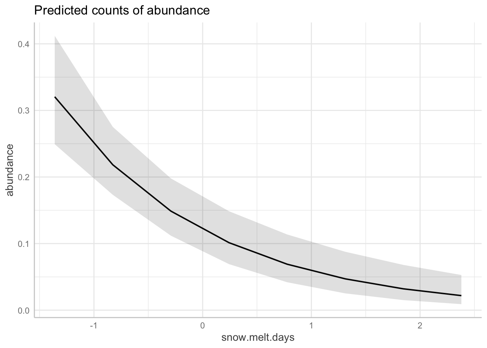
Finally, as we discussed during the workshop, one needs to be careful while interpreting the significance of interactions between trait and environment. There are bootstrap-based developments to do that for the MLML1 model but they have been show to have inflated type I errors (Miller et al. 2019).
Function glmer.nb could have been used to fit the model using the negative binomial family instead.
Here is a good and simple introduction to mixed models for poisson regression:
https://stats.idre.ucla.edu/r/faq/random-coefficient-poisson-models/
Jamil et al. (2013) implemented a mixed model version in which in contrast to MLM1, it adds a fixed effect term for traits is included in the model (as in Brown et al. 2014) and also an additional random effect (intercepts) for site:
MLM2.mod <- glmer(abundance ~ snow.melt.days * seed.mass + (1 + snow.melt.days|species) + (1 | sites) + (1 | obs), family = "poisson", control=glmerControl(calc.derivs=F), nAGQ = 0, data=data.df)
summary(MLM2.mod,scale = TRUE)Warning in summary.merMod(MLM2.mod, scale = TRUE): additional arguments ignoredGeneralized linear mixed model fit by maximum likelihood (Adaptive
Gauss-Hermite Quadrature, nAGQ = 0) [glmerMod]
Family: poisson ( log )
Formula: abundance ~ snow.melt.days * seed.mass + (1 + snow.melt.days |
species) + (1 | sites) + (1 | obs)
Data: data.df
Control: glmerControl(calc.derivs = F)
AIC BIC logLik deviance df.resid
7264.1 7324.6 -3623.0 7246.1 6141
Scaled residuals:
Min 1Q Median 3Q Max
-1.5851 -0.4284 -0.2557 -0.0732 8.9436
Random effects:
Groups Name Variance Std.Dev. Corr
obs (Intercept) 0.1472 0.3837
species (Intercept) 1.6523 1.2854
snow.melt.days 1.0169 1.0084 0.71
sites (Intercept) 0.4344 0.6591
Number of obs: 6150, groups: obs, 6150; species, 82; sites, 75
Fixed effects:
Estimate Std. Error z value Pr(>|z|)
(Intercept) -2.1239 0.1708 -12.436 < 2e-16 ***
snow.melt.days -0.6805 0.1228 -5.543 2.97e-08 ***
seed.mass -0.2050 0.1634 -1.255 0.210
snow.melt.days:seed.mass -0.1134 0.1281 -0.885 0.376
---
Signif. codes: 0 '***' 0.001 '**' 0.01 '*' 0.05 '.' 0.1 ' ' 1
Correlation of Fixed Effects:
(Intr) snw.m. sd.mss
snw.mlt.dys 0.630
seed.mass 0.022 0.029
snw.mlt.d:. 0.023 0.031 0.680 Let’s test the fit difference between MLM1 and MLM2:
anova(MLM1.mod,MLM2.mod)Data: data.df
Models:
MLM1.mod: abundance ~ snow.melt.days + snow.melt.days:seed.mass + (1 + snow.melt.days | species) + (1 | obs)
MLM2.mod: abundance ~ snow.melt.days * seed.mass + (1 + snow.melt.days | species) + (1 | sites) + (1 | obs)
npar AIC BIC logLik deviance Chisq Df Pr(>Chisq)
MLM1.mod 7 7335.5 7382.6 -3660.7 7321.5
MLM2.mod 9 7264.1 7324.6 -3623.0 7246.1 75.406 2 < 2.2e-16 ***
---
Signif. codes: 0 '***' 0.001 '**' 0.01 '*' 0.05 '.' 0.1 ' ' 1c(BIC(MLM1.mod),BIC(MLM2.mod))[1] 7382.551 7324.594We won’t diagnostics here for brevity and the code for the MLM1 can be easily adapted here.
Although the fixed effects for the trait (seed mass) and interaction (seed mass and snow.melt.day) were not significant, the random effect standard deviation for site is relative large (0.66) and improved the predictive power for abundances across species.
ter Braak (2019) proposed yet another version that seems to work better than the previous ones.
MLM3.mod <- glmer(abundance ~ snow.melt.days * seed.mass + (1 + snow.melt.days|species) + (1 + seed.mass|sites) + (1 | obs), family = "poisson", control=glmerControl(calc.derivs=F), nAGQ = 0, data=data.df)Let’s test the fit difference between MLM2 and MLM3:
anova(MLM2.mod,MLM3.mod)Data: data.df
Models:
MLM2.mod: abundance ~ snow.melt.days * seed.mass + (1 + snow.melt.days | species) + (1 | sites) + (1 | obs)
MLM3.mod: abundance ~ snow.melt.days * seed.mass + (1 + snow.melt.days | species) + (1 + seed.mass | sites) + (1 | obs)
npar AIC BIC logLik deviance Chisq Df Pr(>Chisq)
MLM2.mod 9 7264.1 7324.6 -3623.0 7246.1
MLM3.mod 11 7267.0 7341.0 -3622.5 7245.0 1.0759 2 0.5839c(BIC(MLM2.mod),BIC(MLM3.mod))[1] 7324.594 7340.967For these data, the MLM3 does not improve the MLM2.
This is not the end - we will keep updating this page after the workshop
References (still being filled):
AM Brown, DI Warton, NR Andrew, M Binns, G Cassis, H Gibb Methods in Ecology and Evolution 5 (4), 344-352
Choler, P. (2005) Consistent shifts in Alpine plant traits along a mesotopographical gradient. Arctic, Antarctic, and Alpine Research, 37,444–453.
Dray, S., & Legendre, P. (2008) Testing the species traits-environment relationships : The fourth-corner problem revisited. Ecology, 89, 3400–3412.
Dunn, KP & Smyth GK (1996) Randomized quantile residuals. Journal of Computational and Graphical Statistics, 5, 1-10.
Gabriel, KR. (1998) Generalised bilinear regression. Biometrika, 85, 689-700.
Gelman, A & Hill, J (2007). Data analysis using regression and multi-level/hierarchical models. New York, NY: Cambridge University Press.
Harrison, XA (2014). Using observation-level random effects to model overdispersion in count data in ecology and evolution. PeerJ, 2, e616.
Jamil, T., Ozinga, W. A., Kleyer, M., & ter Braak, C. J. F. (2013). Selecting traits that explain species-environment relationships: A generalized linear mixed model approach. Journal of Vegetation Science, 24, 988–1000.
Peres-Neto, P. R., Dray, S., & ter Braak, C. J. F. (2017). Linking trait variation to the environment: Critical issues with community-weighted mean correlation resolved by the fourth-corner approach. Ecography, 40, 806–816.
Pollock, L. J., Morris, W. K., & Vesk, P. A. (2012). The role of functional traits in species distributions revealed through a hierarchical model. Ecography, 35, 716–725.
Simpson, EH (1951). The Interpretation of Interaction in Contingency Tables. Journal of the Royal Statistical Society, Series B., 13, 238–241.
ter Braak, CJF, Cormont, A. & Dray, S. (2012). Improved testing of species traits–environment relationships in the fourth‐corner problem. Ecology, 93, 1525-1526.
ter Braak, CJF & Looman, CWN. (1986). Weighted averaging, logistic regression and the Gaussian response model. Plant Ecology, 65, 3-11.
useful sites for GLMs (will also expand on this later on):
@online{peres-neto2021,
author = {Peres-Neto, Pedro},
title = {Generalized {Linear} {Models} for {Community} {Ecology}},
date = {2021-05-17},
url = {https://bios2.github.io/posts/2021-07-19-glm-community-ecology/},
langid = {en}
}